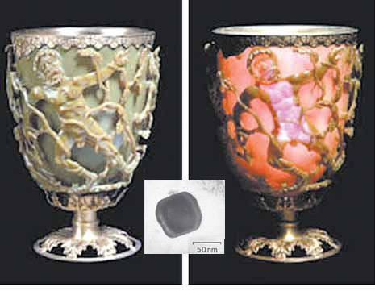
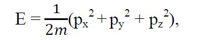
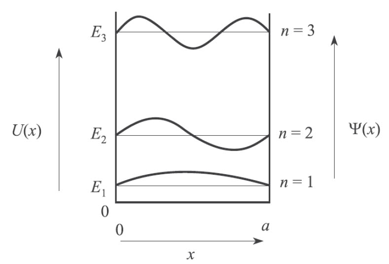
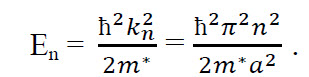
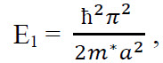
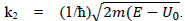
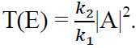
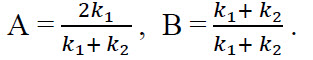
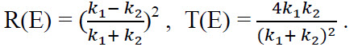
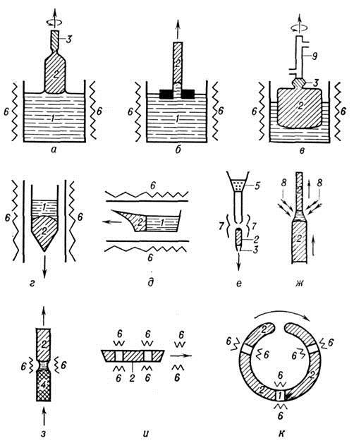

| ||||||||||||||||||||||||||||||||||||||||||||||||||||||||||||||||||||||||||||||||||||||||||||||||||||||||||||||||||||||||||||||||||||||||||||||||||||||||||||||||||||||||||||||||||||||||||||||||||||||||||||||||||||||||||||||||||||||||||||||||||||||||||||||||||||||||||||||||||||||||||||||||||||||||||||||||||||||||||||||||||||||||||||||||||||||||||||||||||||||||||||||||||||||||||||||||||||
Целями образования являются формирование знаний, умений, навыков и интеллектуальное, нравственное, творческое и физическое развитие личности обучающегося. Компонентами системы образования являются:
Образование подразделяется на основное, дополнительное и специальное. ОБЩИЕ ПОЛОЖЕНИЯСтатья 1. Высшее образование Высшее образование - уровень основного образования, достигаемый на основе общего среднего образования, или профессионально-технического образования с общим средним образованием, или среднего специального образования в ходе последовательного и целенаправленного процесса обучения и воспитания, обеспечивающего подготовку квалифицированных специалистов, развитие способностей и интеллектуально-творческого потенциала личности, и завершающийся итоговой аттестацией, по результатам которой присваиваются соответствующая квалификация, а также степень магистра в случаях, предусмотренных настоящим Законом. Статья 2. Законодательство Республики Беларусь о высшем образовании Законодательство Республики Беларусь о высшем образовании основывается на Конституции Республики Беларусь и состоит из актов Президента Республики Беларусь, Закона Республики Беларусь от 29 октября 1991 года "Об образовании" (Ведамасцi Вярхоўнага Савета Рэспублiкi Беларусь, 1991 г., N 33, ст. 598; Национальный реестр правовых актов Республики Беларусь, 2002 г., N 37, 2/844), настоящего Закона и иных актов законодательства Республики Беларусь. Если международным договором, действующим для Республики Беларусь, установлены иные правила, чем те, которые содержатся в настоящем Законе, то применяются правила международного договора. Особенности создания, функционирования учебных заведений, в том числе военных факультетов высших учебных заведений, обеспечивающих подготовку кадров с высшим образованием для Вооруженных Сил Республики Беларусь, других войск и воинских формирований Республики Беларусь (далее - высшие военные учебные заведения), органов внутренних дел, органов и подразделений по чрезвычайным ситуациям, а также особенности такой подготовки определяются в соответствии с актами Президента Республики Беларусь, настоящим Законом и иным законодательством Республики Беларусь. Общественные отношения в сфере послевузовского образования, а также общественные отношения, связанные с прохождением выпускниками высших учебных заведений стажировки, интернатуры, их обучением в клинической ординатуре, законодательством Республики Беларусь о высшем образовании не регулируются. Статья 3. Государственная политика в сфере высшего образования Государственная политика в сфере высшего образования основывается на принципах, определенных Законом Республики Беларусь "Об образовании", и направлена на обеспечение: права граждан на получение на конкурсной основе высшего образования в высших учебных заведениях, в том числе за счет средств республиканского бюджета в государственных высших учебных заведениях; качества высшего образования;предоставления первого рабочего места выпускникам государственных высших учебных заведений в соответствии с трудовым законодательством Республики Беларусь; развития международного сотрудничества в сфере высшего образования. Государство создает условия для развития системы высшего образования, в том числе посредством: содействия функционированию и развитию высших учебных заведений; финансирования государственных высших учебных заведений. Организационной основой реализации государственной политики в сфере высшего образования являются государственные программы развития высшего образования, утверждаемые Правительством Республики Беларусь. Статья 4. Право на получение высшего образования В Республике Беларусь каждый имеет право на получение на конкурсной основе высшего образования, а также на свободу выбора высшего учебного заведения, специальности (специализации), формы получения высшего образования в соответствии с законодательством Республики Беларусь, международными договорами, действующими для Республики Беларусь. Право на получение на конкурсной основе высшего образования за счет средств республиканского бюджета в государственных высших учебных заведениях имеют граждане Республики Беларусь, иностранные граждане и лица без гражданства, постоянно проживающие в Республике Беларусь, а также иные иностранные граждане и лица без гражданства в соответствии с законодательством Республики Беларусь, международными договорами, действующими для Республики Беларусь. Статья 5. Система высшего образования Система высшего образования в Республике Беларусь включает: высшие учебные заведения и другие организации, обеспечивающие функционирование и развитие системы высшего образования; республиканские органы государственного управления и местные исполнительные и распорядительные органы, иные государственные органы и другие организации, в подчинении которых находятся высшие учебные заведения, в пределах их полномочий в сфере высшего образования; участников образовательного процесса; образовательные стандарты высшего образования, разработанные на их основе учебные планы и учебные программы. Статья 6. Структура высшего образования. Сроки обучения в высшем учебном заведении. Высшее образование подразделяется на две ступени: первая ступень высшего образования обеспечивает подготовку специалистов с высшим образованием, обладающих фундаментальными и специальными знаниями и навыками, и завершается присвоением квалификации и выдачей диплома о высшем образовании, предоставляющих право на трудоустройство с учетом присвоенной квалификации в порядке, установленном законодательством Республики Беларусь, и (или) на обучение в магистратуре. Срок обучения на этой ступени составляет четыре - пять лет и может увеличиваться не более чем на один год при обучении по наиболее сложным специальностям, обучении в вечерней и заочной формах получения высшего образования. Перечень наиболее сложных специальностей, срок обучения по которым может увеличиваться не более чем на один год, утверждается Правительством Республики Беларусь. Срок обучения лиц, получивших среднее специальное образование, может быть сокращен высшим учебным заведением по согласованию с Министерством образования Республики Беларусь при условии соблюдения требований образовательных стандартов высшего образования; вторая ступень высшего образования (магистратура) обеспечивает формирование знаний и навыков научно-педагогической и научно-исследовательской работы и завершается присвоением степени "магистр" и выдачей диплома магистра, предоставляющих право на обучение в аспирантуре (адъюнктуре) и (или) на трудоустройство с учетом ранее присвоенной квалификации специалиста с высшим образованием и обучения в магистратуре. Срок обучения на этой ступени от одного до двух лет. Срок обучения лиц, получающих высшее образование и одновременно обучающихся по дополнительной специальности (специализации), увеличивается не менее чем на один год. Срок обучения лиц, получающих второе и последующее высшее образование, составляет не менее трех лет, а по специальностям военного профиля, а также для органов и подразделений по чрезвычайным ситуациям - не менее двух лет. Статья 7. Образовательные стандарты высшего образования Образовательные стандарты высшего образования содержат общие требования к уровню высшего образования, срокам обучения, типам высших учебных заведений, классификации специальностей и квалификациям, уровню подготовки выпускников, документам о высшем образовании, обязательный минимум содержания высшего образования, максимальный объем учебной нагрузки обучающихся, критерии оценки качества образования и предназначены для обеспечения качества высшего образования.
Статья 8. Формы получения высшего образования Высшее образование в Республике Беларусь может быть получено в очной (дневной, вечерней) или заочной (в том числе дистанционной) формах. Очная (дневная, вечерняя) форма получения высшего образования предусматривает постоянное личное участие обучающихся в регулярных учебных и аттестационных мероприятиях высшего учебного заведения. Заочная (в том числе дистанционная) форма получения высшего образования предусматривает преимущественно самостоятельную учебную работу обучающихся, лично участвующих только в ограниченном числе учебных мероприятий, а также в аттестационных мероприятиях, организуемых высшим учебным заведением. Для всех форм получения высшего образования: действуют единые образовательные стандарты высшего образования; допускается обучение по индивидуальным учебным планам в порядке и случаях, определяемых Министерством образования Республики Беларусь. Перечень специальностей, по которым не допускается обучение в вечерней и заочной формах получения высшего образования, утверждается Правительством Республики Беларусь. Образовательный стандарт — технический нормативный правовой акт, определяющий содержание образовательной программы посредством установления требований к образовательному процессу и результатам освоения ее содержания. «Болонским» принято называть процесс создания странами Европы единого образовательного пространства. Его начало было положено подписанием в 1999 г. в Болонье (Италия) Болонской декларации, в которой были сформулированы основные цели, ведущие к достижению сопоставимости и, в конечном счете, гармонизации национальных образовательных систем высшего образования в странах Европы. В свою очередь гармонизация систем высшего образования достигается за счет широкого распространения однотипных образовательных циклов (бакалавриат - магистратура), введения единых или легко поддающихся пересчету систем образовательных кредитов (зачетных единиц), одинаковых форм фиксирования получаемых квалификаций, взаимной признаваемости академических квалификаций, развитых структур обеспечения качества подготовки специалистов и т.д. Десять основных направлений Болонского процесса (10 Bologna Action Lines):
Система сравнимых степеней предполагает трёхуровневую систему высшего образования:
В Европе доминируют две модели системы высшего образования:
Проведение образовательных реформ в духе Болонского процесса выгодно любой европейской стране, что объясняется следующими факторами. Единая Европа предполагает свободное передвижение труда (рабочей силы), товаров и капитала, отсюда необходимость в сравнимости квалификаций в области высшего образования, без чего свободное передвижение высококвалифицированных кадров невозможно. Кроме того, высшее образование становится высокорентабельной сферой бизнеса, в которой лидирующие позиции занимают США. Европа лишь как целое может рассчитывать на успешную конкуренцию в этой области. Республика Беларусь присоединяется к Болонскому процессу исходя из следующих мотивов:
| ||||||||||||||||||||||||||||||||||||||||||||||||||||||||||||||||||||||||||||||||||||||||||||||||||||||||||||||||||||||||||||||||||||||||||||||||||||||||||||||||||||||||||||||||||||||||||||||||||||||||||||||||||||||||||||||||||||||||||||||||||||||||||||||||||||||||||||||||||||||||||||||||||||||||||||||||||||||||||||||||||||||||||||||||||||||||||||||||||||||||||||||||||||||||||||||||||||
Тема 2. МОДЕЛЬ СПЕЦИАЛИСТА В ОБЛАСТИ НАНОТЕХНОЛОГИЙ И НАНОМАТЕРИАЛОВ ДЛЯ ЭЛЕКТРОНИКИ
ОБРАЗОВАТЕЛЬНЫЙ СТАНДАРТ РЕСПУБЛИКИ БЕЛАРУСЬ
ИСПОЛНИТЕЛИ: Борисенко В.Е., проф., д-р физ-мат. наук (руководитель); Колосницын Б.С., проф., канд. тех. наук; Волчек С.А., доцент, канд. физ-мат. наук; Позняк А.А., доцент, канд. физ-мат. наук. Настоящий образовательный стандарт не может быть тиражирован и распространен без разрешения Министерства образования Республики Беларусь. В настоящем стандарте использованы ссылки на следующие нормативные документы: - СТБ 22.0.1-96 Система стандартов в сфере образования. Основные положения - СТБ ИСО 9000-2006 Система менеджмента качества. Основные положения и словарь - ОКРБ 011-2001 Специальности и квалификации - СТБ 22.0.4-2005 Система стандартов в сфере образования. Термины и определения. - РД РБ 02100.5.227-2006 Высшее образование. Первая ступень. Цикл социально-гуманитарных дисциплин.
Основные термины и определения Микро- и наноэлектроника – области науки и техники, которые включают совокупность средств, методов и способов человеческой деятельности, направленных на разработку и создание электронных и оптоэлектронных приборов и интегральных микросхем с микронными и нанометровыми размерами входящих в их состав элементов, соответственно, для информационных систем и технологий. Наноматериалы – материалы, состоящие из структурных единиц с нанометровыми размерами. Нанотехнологии – совокупность методов и средств, позволяющих создавать структуры с нанометровыми размерами. Общая характеристика специальности
Подготовка выпускника по специальности Нанотехнологии и наноматериалы в электронике обеспечивает получение профессиональной квалификации инженер электронной техники. Специальность в соответствии с ОКРБ 011-2001 относится к профилю Техника и технология подготовки специалистов с высшим образованием и имеет обозначение 1-41 01 04.
Требования к предшествующему уровню подготовки
Предшествующий уровень образования должен быть не ниже общего среднего образования, подтвержденный документом государственного образца. Уровень подготовки абитуриента устанавливается в соответствии с утвержденными Правилами приема в высшие учебные заведения Республики Беларусь по дисциплинам: – белорусский язык или русский язык (на выбор), – математика, – физика.
Квалификационная характеристика специалиста
Сфера профессиональной деятельности
Сфера профессиональной деятельности специалиста на основе совокупности естественнонаучных, фундаментальных, общепрофессиональных и специальных знаний: - проектирование, разработка нанотехнологий, моделирование технологических процессов, создание микро- и наноэлектронных, оптоэлектронных и спинтронных интегральных полупроводниковых структур для изделий радиоэлектроники, телекоммуникаций, вычислительной техники, автоматизированных систем управления, осуществляющих электронную и оптическую обработку информации; - разработка программ физического моделирования и компьютерного проектирования нанотехнологий и наноматериалов для производства изделий радиоэлектроники, телекоммуникаций, вычислительной техники, автоматизированных систем управления на их основе; - осуществление научных, опытно-экспериментальных и проектно-конструкторских работ в области физики наноструктур, нанотехнологии изготовлении материалов и структур для электроники и оптоэлектроники, квантовых информационных систем; - обучение и подготовка специалистов в области нанотехнологий и наноматериалов в электронике. Объекты профессиональной деятельности
Объектами профессиональной деятельности специалиста являются технологические процессы и материалы электронной техники, используемые при изготовлении дискретных полупроводниковых приборов, интегральных микросхем, радиоэлектронных устройств и систем, средств телекоммуникаций, вычислительной техники, электронных и оптоэлектронных систем контроля и управления различными процессами, разрабатываемые, исследуемые и производимые на промышленных предприятиях, в научно-исследовательских и проектно-конструкторских организациях, а также изучаемые в учебных заведениях, обеспечивающих получение высшего и среднего специального образования по данной или родственным специальностям.
Виды профессиональной деятельности
Выпускник вуза после адаптации до 1 года должен быть компетентным в следующих видах деятельности: –производственно-технологическая и ремонтно-эксплуатационная; –проектно-конструкторская и научно-исследовательская; –монтажно-наладочная; –организационно-управленческая; –образовательная; –инновационная.
Задачи профессиональной деятельности
Выпускник вуза должен быть компетентен решать следующие профессиональные задачи: – проектирование, организация и сопровождение производства изделий электронной техники с использованием нанотехнологий и наноматериалов; – разработка и исследование новых нанотехнологий и наноматериалов для электроники; – разработка и эксплуатация автоматизированных систем проектирования нанотехнологий и наноматериалов в электронике; – разработка и эксплуатация автоматизированных систем управления нанотехнологическими процессами изготовления изделий электронной техники; – проведение фундаментальных и прикладных научных исследований по актуальным проблемам микро- и наноэлектроники, оптоэлектроники, спинтроники, молекулярной электроники, наноматериалам и нанотехнологиям для электроники; – оценка качества и надежности изделий электронной техники, изготовленных с использованием нанотехнологий и наноматериалов; – технико-экономический анализ научно-исследовательской, опытно-конструкторской и производственной деятельности; – прогнозирование социальных и экологических результатов деятельности; – обучение и повышение квалификации технического персонала; – подготовка специалистов в высших и средних специальных учебных заведениях.
Требования к уровню подготовки выпускника
Общие требования к уровню подготовки
Выпускник должен иметь достаточный уровень знаний и умений в области социально-гуманитарных, естественнонаучных, общепрофессиональных и специальных дисциплин, дисциплин специализации для осуществления социально-профессиональной деятельности. Выпускник должен уметь непрерывно пополнять свои знания, анализировать исторические и современные проблемы социально-экономической и духовной жизни общества, знать идеологию белорусского государства, нравственные и правовые нормы, уметь учитывать их в своей профессиональной деятельности и жизнедеятельности. Выпускник должен владеть государственными языками (белорусским, русским), одним или несколькими иностранными языками, быть готовым к постоянному профессиональному, культурному и физическому самосовершенствованию.
Требования к образовательной программе и ее реализации Состав образовательной программы
Образовательная программа должна включать: учебный план, программы учебных дисциплин, программы учебных, производственных и преддипломной практик, порядок выполнения курсовых и дипломного проектов (работ), программу государственной аттестации, которые должны соответствовать требованиям настоящего стандарта. Образовательная программа подготовки выпускника должна предусматривать изучение студентом следующих циклов: - социально-гуманитарных дисциплин; - естественнонаучных дисциплин; - общепрофессиональных и специальных дисциплин; - дисциплин специализации.
Требования к разработке образовательной программы
Максимальный объем учебной нагрузки студентов не должен превышать 54 академических часов в неделю, включая все виды аудиторной и внеаудиторной работы. Объем обязательных аудиторных занятий студентов, определяемый вузом с учетом специальности, специфики организации учебного процесса, оснащения учебно-лабораторной базы, информационного, учебно-методического обеспечения, должен быть установлен в пределах 24-36 часов. В часы, отводимые на самостоятельную работу по учебной дисциплине, включается время, предусмотренное на подготовку к экзаменам. При разработке учебного плана вуз имеет право изменять количество часов, отводимых на освоение учебного материала: для циклов дисциплин – в пределах 5 %, для дисциплин, входящих в цикл, – в пределах 10 % без превышения максимального недельного объема нагрузки студента и при сохранении требований к содержанию, указанных в настоящем стандарте.
Требования к срокам реализации образовательной программы
Срок реализации образовательной программы при дневной форме обучения составляет 256 недель, включая 4 недели отпуска после окончания вуза. Продолжительность обучения по видам учебной деятельности – в соответствии с таблицей 1.
Таблица 1
При заочной форме обучения студентам должна быть обеспечена возможность занятий с преподавателями в объеме не менее 160 часов в год.
Типовой учебный план
Типовой учебный план – в соответствии с таблицей 2.
Таблица 2
Продолжение табл.2
В соответствии с типовым учебным планом, установленным стандартом, вузом разрабатывается учебный план специальности, который согласовывается с УМО, Управлением высшего и среднего специального образования Министерства образования и утверждается ректором вуза.
Требования к обязательному минимуму содержания учебных программ и компетенциям по дисциплинам
Содержание учебной программы дисциплины по каждому циклу представляется в укрупненных дидактических единицах (или учебных модулях), а требования к компетенциям по дисциплине – в знаниях и умениях. Цикл социально-гуманитарных дисциплин устанавливается в соответствии с образовательным стандартом РД РБ 021005.227-2006 «Высшее образование первой ступени. Цикл социально-гуманитарных дисциплин».
Цикл естественнонаучных дисциплин
Высшая математика
Аналитическая геометрия и линейная алгебра. Введение в математический анализ. Дифференциальное исчисление функций одной переменной. Векторные и комплексные функции скалярного аргумента. Многочлены. Функции многих переменных. Интегральное исчисление функций одной переменной. Интегралы, зависящие от параметра. Интегральное исчисление функций многих переменных. Векторный анализ. Дифференциальные уравнения и системы. Числовые и функциональные ряды. Фурье – анализ. Функции комплексной переменной. Операционное исчисление. Уравнения математической физики. Разностные уравнения. Дискретные преобразования. Численные методы. В результате изучения дисциплины обучаемый должен: знать: – методы математического анализа, аналитической геометрии, линейной алгебры, теории функций комплексного переменного, операционного исчисления, теории поля; – численные методы решения инженерных задач; – операции над комплексными числами и формы их представления; уметь: – дифференцировать и интегрировать функции; – производить операции над матрицами и комплексными числами; разлагать функции в степенные ряды и ряды Фурье; – решать простейшие обыкновенные дифференциальные уравнения.
Теория вероятностей и математическая статистика
Теория вероятностей: Аксиомы теории вероятностей. Классическое определение вероятности. Геометрическое определение вероятностей. Теоремы сложения и умножения вероятностей. Формула полной вероятности. Формула Байеса. Формула Бернулли. Теорема Пуассона. Локальная и интегральная теоремы Муавра-Лапласа. Функция и плотность распределения случайной величины. Ряд распределения вероятностей. Математическое ожидание, дисперсия, среднее квадратическое отклонение. Начальные и центральные моменты. Мода, медиана, квантиль. Закон распределения и числовые характеристики функций случайного аргумента. Характеристическая функция. Функция распределения, матрица вероятностей и плотность распределения двумерных случайных величин. Условные законы распределения. Корреляционный момент и коэффициент корреляции. Регрессия. Теоремы о математическом ожидании и дисперсии суммы и произведения случайных величин. Закон больших чисел. Неравенство и теорема Чебышева. Теорема Бернулли. Центральная предельная теорема. Математическая статистика: Вариационный ряд. Эмпирическая функция распределения. Интервальный статистический ряд. Гистограмма. Точечные и интервальные оценки числовых характеристик случайных величин. Метод моментов и метод наибольшего правдоподобия оценки параметров распределения. Критерии согласия Пирсона и Колмогорова. Статистические критерии двумерных случайных величин Оценка регрессионных характеристик. Метод наименьших квадратов. В результате изучения дисциплины обучаемый должен: знать: - основные положения, формулы и теоремы теории вероятностей для случайных событий, одномерных и многомерных случайных величин; - основные методы статистической обработки и анализа случайных опытных данных; уметь: - строить математические модели для типичных случайных явлений; - использовать вероятностные методы в решении важных для инженерных приложений задач; - использовать вероятностные и статистические методы в расчетах надежности радиотехнических систем и сетей.
Физика
Физические основы механики, молекулярная физика и термодинамика: кинематика, динамика материальной точки, законы сохранения, неинерциальные системы отсчета, механика твердого тела, колебания, волны, специальная теория относительности, движение в микромире, основы молекулярной физики и термодинамики, жидкое состояние вещества. Электричество, магнетизм и электромагнитные волны: электростатическое поле в вакууме, электрическое поле в диэлектрике, постоянный электрический ток, магнитное поле в вакууме, магнитное поле в веществе, явление электромагнитной индукции, электромагнитные колебания, уравнения Максвелла, электромагнитные волны. Оптика: интерференция, дифракция, поляризация, взаимодействие электромагнитного излучения с веществом. Квантовая физика: квантовая природа электромагнитного излучения, волновые свойства микрочастиц, операторы квантовой физики, уравнение Шредингера, элементы квантовой статистики. Строение и физические свойства вещества: элементарные частицы, физика ядра, физика атома, двухатомная молекула, физика твердого тела. В результате изучения дисциплины обучаемый должен: знать: – основные понятия, законы и физические модели механики, электричества и магнетизма, термодинамики, колебаний и волн, квантовой физики, статистической физики; – новейшие достижения в области физики и перспективы их использования для создания технических устройств; уметь: – использовать основные законы физики в инженерной деятельности; – использовать методы теоретического и экспериментального исследования в физике; – использовать методы численной оценки порядка величин, характерных для различных прикладных разделов физики.
Общая и неорганическая химия
Общая химия: Основные количественные законы химии. Строение вещества. Современная теория строения атома. Периодичность свойств элементов. Химическая связь, ее разновидности и реализация в структуре твердых тел. Энергетика химических реакций, элементы химической термодинамики. Кинетика физико-химических процессов, основные кинетические законы и уравнения. Химическое и фазовое равновесие. Физико-химический анализ. Электролиты и их основные характеристики. Гетерогенные окислительно-восстановительные реакции. Кинетика и термодинамика электрохимических процессов. Электрохимическая коррозия металлов и методы защиты от коррозии. Химия конструкционных материалов: химия металлов, полупроводников, полимеров. Новые материалы в энергетике, микро-, нано- и оптоэлектронике. Неорганическая химия: Периодическая система элементов. Химический элемент. Комплексные соединения. Понятие о классификации комплексных соединений. Номенклатура и изомерия комплексных соединений. Химическая связь в комплексных соединениях. Спектрохимический ряд. Термодинамическая и кинетическая устойчивость комплексных соединений. Типы реакций комплексных соединений. Хелатный эффект. Эффект трансвлияния. Химия элементов. Водород и его соединения. Гелий и p?элементы восьмой группы. p?элементы седьмой, шестой, пятой, четвертой группы, третьей, второй и первой групп. Общая характеристика d?элементов. Сходство химических свойств элементов по периодам и группам. Характер химических связей в соединениях в зависимости от степени окисления. d?элементы третьей (подгруппы скандия), четвертой (подгруппы титана), пятой группы (подгруппы ванадия), шестой группы (подгруппы хрома), седьмой группы (подгруппы марганца), восьмой группы (триада железа, платиновые металлы), первой группы (подгруппы меди), второй группы (подгруппы цинка), групп. Особенности переходных элементов по сравнению с элементами главной группы. Оксиды, гидроксиды, соли. Изменение кислотно-основных свойств. Комплексные соединения. Получение, свойства и применение. Общая характеристика f?элементов. Склонность к комплексообразованию. Сходство и различие в свойствах 4? и 5f?элементов. Лантаноиды. Простые вещества и соединения лантаноидов. Актиноиды. Соединения урана, тория, нептуния и плутония. В результате изучения дисциплины обучаемый должен: знать: - основные понятия и законы химии, химической кинетики и химической термодинамики; - суть физико-химических процессов и явлений, составляющих основу технологии производства материалов и изделий электронной техники; - основные понятия неорганической химии, свойства элементов, простых веществ и их соединений во взаимосвязи со строением атома, структурой вещества; - основные методы синтеза неорганических соединений; уметь: - использовать достижения химической технологии при производстве и конструировании радиоэлектронных средств и систем твердотельной электроники; - использовать методы теоретического и экспериментального исследования в химии в практической деятельности и решении экологических проблем; - использовать достижения химии в практической деятельности и решении экологических проблем выбирать условия и методики получения неорганических соединений; - оценивать химическую активность и совместимость неорганических соединений и материалов в условиях предполагаемой эксплуатации; - оценивать экологичность и экономическую эффективность технологий и продуктов неорганического синтеза.
Физическая химия
Термодинамические системы, параметры, процессы. Первое начало термодинамики и его практическое использование при расчете энергетических эффектов. Закон Гесса и Кирхгофа. Второе начало термодинамики. Энтропия системы и ее изменение. Характеристические термодинамические функции: энтальпия, энтропия, свободная энергия Гельмгольца и Гиббса. Критерии направленности процессов в закрытых и открытых термодинамических системах. Химический потенциал. Фундаментальные уравнения состояния. Кинетика и термодинамика электрохимических процессов. Факторы, влияющие на скорость электрохимических процессов. Явление поляризации и деполяризации. Поляризация и перенапряжение при электролизе. Выход по току. Электрохимические процессы в технике: химические источники тока, гальванотехника, хемотроника, электрохимическое травление. Кинетика и термодинамика коррозионных процессов. Химические и электрохимические способы защиты от коррозии. Фазовые переходы и равновесия. Уравнение Клапейрона–Клаузиуса, закон Нернста–Шилова, правило фаз Гиббса. Р–Т–диаграммы состояния однокомпонентных систем. Т–х–диаграммы состояния бинарных систем с образованием конгруэнтно–и инконгруэнтно плавящихся соединений, твердых растворов замещения неограниченной и ограниченной растворимости. Физико-химический анализ. Диаграммы состояния полупроводниковых систем. Использование Т–х–диаграмм для выбора условий синтеза, очистки и легирования полупроводниковых материалов. В результате изучения дисциплины обучаемый должен: знать: - основные теоретические положения и законы химической термодинамики и кинетики применительно к химическим процессам и фазовым превращениям; - суть физико-химических процессов и явлений, лежащих в основе разработки и производства материалов электронной техники; - тенденции развития основных направлений и методов физической химии в связи с современными требованиями микро- и наноэлектроники; - суть процессов и явлений, отражающих взаимосвязь между составом, структурой, условиями синтеза и свойствами материалов для микро- и наноэлектроники; уметь: - использовать теоретические положения курса при изучении специальных дисциплин, основ технологии получения и использования новых материалов; - использовать методы термодинамического и комплексного физико-химического анализов для определения термодинамической совместимости материалов в приборах и твердотельных система; - использовать основные законы химической термодинамики и кинетики в оценке критериев и скорости протекания желательных и нежелательных процессов.
Квантовая механика и статистическая физика
Атомизм микромира. Дифракция микрочастиц. Принцип суперпозиции. Статистические ансамбли квантовой механики. Соотношение неопределенностей. Роль измерительного прибора. Математические основы квантовой механики. Операторы квантовой механики. Гамильтониан. Уравнение Шредингера. Основные законы сохранения. Связь квантовой механики с классической механикой. Квазиклассическое приближение. Постулаты квантовой механики. Элементы теории представлений. Уравнение Лиувилля - фон Неймана. Движения в поле центральной силы и в периодическом поле. Уравнение Паули. Элементы теории возмущений. Эффекты Зеемана и Штарка. Элементы теории столкновений микрочастиц. Формула Резерфорда. Введение в теорию квантовых переходов. Поглощение и излучение света. Дисперсия и комбинационное рассеяние. Туннельный эффект. Квантовая механика системы микрочастиц. Принцип тождественности частиц. Частицы Бозе и Ферми. Принцип Паули. Вторичное квантование. Газы Ферми - Дирака и Бозе - Эйнштейна. Периодическая система Менделеева. Основы зонной теории твердых тел. Классическая статистика равновесных состояний. Распределения Максвелла, Больцмана, Гиббса. Принцип детального равновесия. Идеальный и реальный газы. Электронный газ. Статистическая физика неравновесных состояний. Теорема Лиувилля. Кинетическое уравнение Больцмана. Приближение времени релаксации. Введение в физику открытых систем. В результате изучения курса студент должен знать: - фундаментальные физические законы, лежащие в основе поведения микрочастиц, в том числе и систем из них; уметь: - характеризовать принципы и законы квантовой механики при описании поведения микрочастиц в различных условиях; - анализировать либо законы квантовой механики, либо законы классической статистической физики при анализе систем микрочастиц.
Цикл общепрофессиональных и специальных дисциплин
Основы алгоритмизации и программирования
Основы алгоритмизации и возможности языков программирования высокого уровня: общие сведения об алгоритмах и электронных вычислительных машинах, общая характеристика языка программирования высокого уровня, программирование разветвляющихся алгоритмов, программирование циклических алгоритмов, работа с массивами, динамическое распределение памяти, подпрограммы, использование строк, использование записей (структур), работа с файлами, графическое отображение информации, объектно-ориентированное программирование. Программная реализация алгоритмов на структурах данных: программирование рекурсивных алгоритмов, программирование алгоритмов поиска и сортировки в массивах, динамические структуры данных в виде связанных линейных списков, алгоритмы на связанных линейных списках, алгоритмы на древовидных структурах данных. Программная реализация алгоритмов вычислительной математики: алгоритмы линейной алгебры, алгоритмы аппроксимации функций, алгоритмы численного интегрирования, алгоритмы решения нелинейных уравнений, алгоритмы оптимизации. Теоретические основы алгоритмизации и программирования: основы теории и некоторые проблемы алгоритмов, технологии программирования. В результате изучения дисциплины обучаемый должен: знать: – современное состояние одного из алгоритмических языков высокого уровня; – основные динамические структуры данных и алгоритмы их обработки; – наиболее эффективные и часто используемые на практике вычислительные алгоритмы решения инженерных задач; – теоретические основы алгоритмизации и проектирования программ; уметь: – выполнять алгоритмизацию и программирование инженерных задач; - использовать имеющееся программное обеспечение; - анализировать исходные и выходные данные решаемых задач и формы их представления; - отлаживать программы.
Теория электрических цепей
Теория электрических цепей и электромагнитного поля: законы теории электрических и магнитных цепей, основные понятия и законы электромагнитного поля. Теория линейных электрических цепей: свойства и эквивалентные параметры электрических цепей при синусоидальных токах, методы расчета электрических цепей при установившихся синусоидальном и постоянном токах, резонансные явления и частотные характеристики, расчет трехфазных цепей, расчет электрических цепей при периодических несинусоидальных токах, переходные процессы в электрических цепях с сосредоточенными параметрами и методы их расчета, четырехполюсники и многополюсники, понятие о синтезе электрических цепей, электрические цепи с распределенными параметрами. Теория нелинейных электрических и магнитных цепей: элементы нелинейных электрических цепей, установившиеся процессы в нелинейных цепях и методы их расчета, методы расчета переходных процессов в нелинейных электрических цепях, электрические машины. В результате изучения дисциплины обучаемый должен: знать: - свойства и методы анализа линейных и нелинейных электрических цепей; - методы синтеза линейных электрических цепей; - свойства и методы анализа магнитных цепей; уметь: - использовать методы расчета и анализа электрических цепей; - составлять и анализировать эквивалентные схемы электротехнических устройств и систем; - экспериментально исследовать процессы в электрических и магнитных цепях.
Начертательная геометрия и инженерная графика Метод проецирования. Чертежи основных геометрических фигур. Позиционные задачи. Способы преобразования чертежа. Метрические задачи. Поверхности. Решение задач начертательной геометрии на электронных вычислительных машинах. Графическое оформление чертежей. Изображение предметов на чертежах. Изображение соединений деталей. Чертежи деталей. Чертеж сборочной единицы. Схемы. Автоматизация графических работ. В результате изучения дисциплины обучаемый должен: знать: − теоретические основы построения графических моделей (изображений) методом прямоугольного проецирования (включая аксонометрические проекции); уметь: − решать позиционные и метрические задачи с пространственными формами на плоскости; − строить изображения (виды, разрезы, сечения, аксонометрические проекции) на чертежах и эскизах изделий с натуры и по чертежу сборочной единицы с учетом правил и условностей, изложенных в стандартах; − наносить размеры на чертежах и эскизах деталей и сборочных единиц по правилам стандартов; − читать чертежи деталей и сборочных единиц и оформлять их в соответствии с требованиями стандартов; − работать с графическими редакторами на персональных компьютерах.
Защита населения и объектов от чрезвычайных ситуаций. Радиационная безопасность
Опасность для человека и окружающей среды. Безопасность в чрезвычайных ситуациях. Безопасность и экологичность технических систем. Защита населения в чрезвычайных ситуациях. Устойчивость и управление безопасностью объектов хозяйствования. Методы и средства ликвидации последствий чрезвычайных ситуаций. Энергетические установки и экологическая безопасность. В результате изучения дисциплины обучаемый должен: знать: – о возможных чрезвычайных ситуациях и экологической безопасности; – основные способы ликвидации последствий чрезвычайных ситуаций; уметь: – анализировать и оценивать опасности в чрезвычайных условиях и принимать основные меры ликвидации последствий; – определять параметры, характеризующие состояние окружающей среды.
Охрана труда
Законодательные акты в области охраны труда. Производственный травматизм. Классификация и статистика. Организация охраны труда на производстве. Производственная санитария. Гигиена труда. Освещение. Шум и ультразвук. Метеоусловия в помещениях. Вибрации. Электромагнитные поля, ионизирующее, лазерное, ультрафиолетовое и инфракрасное излучения. Электробезопасность. Виды электропоражений и их причины. Защитные средства. Технические и организационные мероприятия по обеспечению безопасности в электроустановках различного напряжения. Грузоподъемные механизмы. Сосуды под давлением. Пожарная безопасность. Пожарная охрана и профилактика. Горение и причины пожаров. Эвакуация людей. Средства пожаротушения. Электрооборудование пожаро- и взрывоопасных помещений. Пожаротушение в действующих электроустановках. Вентиляция и противодымная защита путей эвакуации. Молниезащита, ее виды и параметры. Организация пожарной безопасности на производстве. Эргономические основы безопасности труда. В результате изучения дисциплины обучаемый должен: знать: – основы охраны труда и техники безопасности на объектах радиоэлектронной промышленности; – причины и условия возникновения опасных и вредных факторов на рабочих местах; – правила техники безопасности при производстве работ в электроустановках; – нормативно-технические документы по охране труда; уметь: – проводить организационные и технические мероприятия по обеспечению безопасности персонала при работах на объектах радиоэлектронной промышленности; – проектировать оборудование с учетом требований охраны труда персонала и техники безопасности; – использовать приемы, способы и устройства безопасной работы с электроустановкми.
Основы экологии
Биосфера. Экосистема. Среда и условия существования организмов. Природные условия как фактор развития. Загрязнение биосферы. Нормативы допустимой антропогенной нагрузки на окружающую среду. Мониторинг окружающей среды. Методы очистки и обезвреживания выбросов. Обращение с отходами. Система управления окружающей средой. Стандарты. Экологическое нормирование, планирование и прогнозирование. Правовое регулирование Республики Беларусь и международное сотрудничество в области охраны окружающей среды. В результате изучения дисциплины обучаемый должен: знать: - закономерности развития жизни на Земле и принципы устройства биосферы; - основные экологические проблемы и мероприятия по охране окружающей среды; - последствия и нормативы допустимого антропогенного воздействия на природу, экологические стандарты; - основные нормативные документы в области охраны окружающей среды; уметь: - анализировать качество среды обитания и информацию о ее состоянии; - организовать мониторинг состояния окружающей среды и обосновать нормативы допустимого на нее воздействия; - давать экономическую оценку природных ресурсов, ущерба от загрязнения окружающей среды, выбирать оборудование для очистки сточных вод и газовых выбросов.
Основы энергосбережения
Основные понятия. Энергетические ресурсы Республики Беларусь. Возобновляемые и невозобновляемый источники энергии. Источники энергии. Структура энергосбережения. Энергетическое хозяйство. Вторичные энергетические ресурсы. Транспортирование и аккумулирование тепловой и электрической энергии. Энергосбережение в системах потребления энергоресурсов. Экологические аспекты энергетики и энергосбережения. Энергосбережение в зданиях и сооружениях. Нормирование потребления энергии. Республиканская программа энергосбережения. В результаты изучения дисциплины обучаемый должен: знать: - свойства возобновляемых и невозобновляемых энергетических ресурсов Республики Беларусь и их природный потенциал; - источники вторичных энергетических ресурсов, направления их использования; - организацию и управление энергосбережением на производстве путем внедрения энергетического менеджмента по оценке эффективных инвестиций в энергосберегающие мероприятия на основе анализа затрат; уметь: - экономно и рационально использовать все виды энергии на рабочем месте; - рассчитывать энергоэффективность энергоустановок и использование вторичных энергетических ресурсов; - владеть приемами и средствами управления энергоэффективностью и энергосбережением.
Организация производства и управление предприятием
Промышленное предприятие как производственная система. Производственный процесс и принципы его организации во времени и в пространстве. Организация автоматизированного производства. Организация вспомогательных цехов и обслуживающих хозяйств предприятия. Организация управления качеством продукции. Организация труда, его нормирование, заработная плата на предприятии. Организация, планирование и управление процессами создания и освоения новой техники (СОНТ). Организация внутризаводского планирования. Основы организации прогнозирования и бизнес-планирования производственно-хозяйственной деятельности предприятия. Управление предприятием. В результате изучения дисциплины обучаемый должен: знать: - организацию, планирование и управление работой основных, вспомогательных цехов и обслуживающих хозяйств предприятия; - методы организации, нормирования и оплаты труда работников предприятия; - основы организации работ по созданию и освоению новой техники и технологии; - организационные и методические основы управления предприятием; уметь: - организовывать производственные и трудовые процессы; - решать практические задачи по внутрипроизводственному планированию работы основных, вспомогательных цехах и обслуживающих хозяйствах предприятия; - принимать и оценивать эффективность управленческих решений. Экономика предприятия
Предприятие и внешняя среда: место и роль радиоэлектронной промышленности в народнохозяйственном комплексе, предприятие как субъект хозяйствования. Производственные ресурсы и эффективность их использования: труд и его эффективность, основные фонды и их эффективность, оборотные средства предприятия и их эффективность. Функционирование предприятия: производственная программа предприятия, оплата труда на предприятии, издержки, себестоимость и цена продукции. Развитие предприятия: инновации и инновационная деятельность предприятия, инвестиции и инвестиционная деятельность предприятия. Формы и методы хозяйственной деятельности: концентрация и комбинирование производства, специализация и кооперирование производства. Результативность деятельности предприятия: доход, прибыль, рентабельность. В результате изучения дисциплины обучаемый должен: знать: - основы функционирования производства; сущность и особенности развития современного производства, специфические особенности проявления объективных экономических законов в деятельности предприятий и объединений; - сущность основных экономических категорий: производительность труда, заработная плата, себестоимость продукции, цена, прибыль, рентабельность; - методические положения оценки эффективности производства и рационального использования всех видов ресурсов; - методы анализа и обоснования выбора оптимальных научных, технических и организационных решений с использованием экономических рычагов, стимулов и критериев в рамках будущей профессиональной деятельности; уметь: - характеризовать организационно–правовые формы предприятий; - характеризовать структуру основного и оборотного капитала; - характеризовать виды издержек производства, показатели работы предприятия; - оценивать факторы, влияющие на основные показатели работы предприятия; - обосновывать производственную программу предприятия; - рассчитывать фонд заработной платы, потребности в производственных ресурсах предприятия и показателей их использования; - определять себестоимость продукции, рассчитывать выручку от реализации, прибыли и рентабельности; - проводить технико-экономическое обоснование инвестиционных и инновационных проектов.
Основы управления интеллектуальной собственностью
Интеллектуальная собственность. Авторское право и смежные права. Промышленная собственность. Патентная информация. Патентные исследования. Введение объектов интеллектуальной собственности в гражданский оборот. Коммерческое использование объектов интеллектуальной собственности. Защита прав авторов и правообладателей. Разрешение споров в области интеллектуальной собственности. В результате изучения дисциплины обучаемый должен: знать: - основные понятия и термины в сфере интеллектуальной собственности; - основные положения международного и национального законодательства об интеллектуальной собственности; - порядок защиты прав на объекты интеллектуальной собственности; - методики патентного поиска, обработки результатов; уметь: - проводить патентные исследования (патентно-информационный поиск, в том числе с использованием сети Интернет), - проводить анализ патентной информации, оценивать патентоспособность и патентную чистоту технических решений; - оформлять заявки на выдачу охранных документов на объекты промышленной собственности; - оформлять договора на передачу имущественных прав на объекты интеллектуальной собственности; - управлять интеллектуальной собственностью в организации.
Основы защиты информации
Системная и правовая методология защиты информации: основные понятия и терминология, классификация угроз информационной безопасности, классификация методов защиты информации. Организационные методы защиты информации: государственное регулирование в области защиты информации, лицензирование деятельности юридических и физических лиц по защите информации, сертификация и аттестация средств защиты и объектов информации, управление рисками, физическая защита информации, комбинированные методы защиты информации. Технические каналы утечки информации. Пассивные методы защиты информации от утечки по техническим каналам. Активные методы защиты информации от утечки по техническим каналам. Программно-техническое обеспечение защиты информации: алгоритмы шифрования, электронно?цифровая подпись, защита информации в электронных платежных системах, методы разграничения доступа и способы их реализации. Защита объектов от несанкционированного доступа: интегральные системы безопасности, противодействие техническим средствам разведки. В результате изучения дисциплины обучаемый должен: знать: - системную методологию, правовое и нормативное обеспечение защиты информации; - организационные и технические методы защиты информации; - активные и пассивные мероприятия по защите информации; - основы криптологии; - технические каналы утечки информации их обнаружение и обеспечение информационной безопасности; уметь: - анализировать вероятные угрозы информационной безопасности для заданных объектов; - определять возможные каналы утечки информации; - выбирать методы и средства блокирования каналов утечки информации; - качественно оценивать алгоритмы, реализующие криптографическую защиту информации, процедуры аутентификации и контроля целостности; - разрабатывать рекомендации по защите объектов различного типа от несанкционированного доступа.
Материалы электронной техники и технология их получения
Виды химической связи и особенности внутреннего строения вещества. Классификация материалов по фазовому составу, свойствам и техническому назначению. Методы и технологии выращивания поли? и монокристаллов, создания аморфных и композитных материалов. Физическая природа электропроводности металлов, сплавов, полупроводников, диэлектриков и композиционных материалов. Характеристика проводящих и резистивных материалов во взаимосвязи с их применением в электронной технике. Характеристика и основные физико-химические, электрические и оптические свойства элементарных полупроводников, полупроводниковых соединений и твердых растворов на их основе. Классификация, применение диэлектриков. Основные физические процессы в диэлектриках (поляризация, удельная проводимость, диэлектрические потери, пробой) и способы их описания. Активные и пассивные диэлектрические материалы и элементы на их основе. Магнитные материалы и элементы общего назначения. Тонкопленочная технология и используемые в ней материалы. Толстопленочная технология и используемые в ней материалы. Материалы полупроводниковых интегральных микросхем. В результате изучения дисциплины студенты должны: знать: - теоретические основы материалов электронной техники; - природу свойств материалов; - принципиальные пути управления свойствами материалов; уметь: - характеризоватьосновные свойства материалов электронной техники; - характеризоватьвлияние внешних факторов на электрофизические параметры этих материалов; - характеризоватьусловия сохранения стабильности свойств материалов; - характеризовать основные материалы электронной техники; - анализировать возможность улучшения свойств существующих материалов; - анализировать возможность создания новых материалов с улучшенными свойствами.
Основы твердотельной электроники
Физика работы электронно-дырочного перехода, выпрямляющих, туннельных, лавинно-пролетных диодов и диодов Шоттки. Структура, основные статические вольтамперные характеристики и параметры маломощных и мощных биполярных транзисторов. Полевые транзисторы с управляющим р-n переходом и затвором Шоттки, транзисторы на структурах металл-окисел-полупроводник (МОП). Тиристоры. Методы измерения, обработки и представления результатов измерения электрических и тепловых параметров полупроводниковых приборов и интегральных микросхем. В результате изучения дисциплины обучаемый должен: знать: - физические процессы, протекающие в полупроводниковых структурах и электронно-дырочных переходах; - предельные электрические характеристики и области применения полупроводниковых диодов, биполярных и полевых транзисторов; - физико-топологические и электрические модели элементов интегральных микросхем; - методы и схемы измерений электрических параметров полупроводниковых приборов. уметь: - характеризовать причины, приводящие к изменению величины порогового напряжения МОП-транзистора; - характеризовать причины, вызывающие ограничения величин частоты отсечки мощных биполярных и МОП-транзисторов; - характеризовать показатели надежности интегральных микросхем; - характеризовать области использования изучаемых приборов и элементов.
Физика конденсированного состояния Понятие конденсированного состояния. Жидкости, твёрдые тела, их характеристика. Кристаллическое и аморфное состояния твёрдого тела, их характеристика. Структура и симметрия твердых тел. Обратная решетка. Рассеяние волн в кристаллах. Упругие свойства кристаллов. Колебания кристаллической решетки. Фононы. Электронные состояния в кристаллах. Зонная структура полупроводников. Типы дефектов и соответствующие им дефектные уровни в запрещенной зоне полупроводника. Статистика электронов и дырок в металлах и полупроводниках. Вырожденный и невырожденный электронный газ. Уравнение электронейтральности. Кинетические явления в кристаллах. Уравнение Больцмана и его применение в частных случаях: электропроводность, гальвано- и термоэлектрические и магнитные эффекты. Механизмы рассеяния носителей заряда. Оптические явления в твердых телах. Оптические константы и механизмы поглощения. Неравновесные электронные процессы в полупроводниках. Уравнение непрерывности. Амбиполярные диффузия и дрейф носителей заряда. Механизмы рекомбинации носителей заряда. Некристаллические твердые тела, их электронная структура. Механизмы электропроводности в неупорядоченных средах. Диэлектрические свойства твердых тел. Механизмы поляризации и электропроводности в диэлектриках. Магнитные свойства кристаллов. Сверхпроводимость. В результате изучения дисциплины обучаемый должен: знать: − основные структурные, электронные, оптические и магнитные свойства полупроводников, диэлектриков, проводников и сверхпроводников; − методы теоретического описания и исследования процессов и свойств материи в конденсированном состоянии; уметь: − использовать теоретические знания при экспериментальном анализе и теоретических расчетах свойств и физических процессов в твердых телах и жидкостях; − качественно и количественно анализировать основные физические процессы, происходящие на границах раздела твердых тел, твердых тел с жидкостями, твердых тел с газами, жидкостей с газами.
Компьютерное моделирование, расчет и проектирование изделий микро- и наноэлектроники
Назначение систем автоматизированного проектирования и их роль в современной науке и технике. Инструментарий систем автоматизированного проектирования (САПР). Иерархия систем автоматизированного проектирования в микроэлектронике. Особенности методов систем автоматизированного проектирования сверхбольших интегральных схем. Назначение и характеристики основных систем автоматизированного проектирования в микро- и наноэлектронике. Физические модели технологических операций микро- и наноэлектроники и их численная реализация. Построение чертежа электрической схемы. Основы логического моделирования цифровых и аналоговых интегральных микросхем.
В результате изучения дисциплины обучаемый должен: знать: - физические и математические модели, описывающие базовые технологические процессы и элементы интегральных микросхем; - основные особенности этапов проектирования интегральных микросхем: физико-технологического, функционально-логического, схемотехнического, топологического; - методы и средства автоматизированного проектирования интегральных микросхем; - назначение и характеристики основных программных комплексов САПР микро- и наноэлектроники; - уметь: - характеризовать модели, используемые для расчетов технологических процессов и элементов интегральных микросхем; - характеризовать физико-математические модели, лежащие в основе программных комплексов САПР микро- и наноэлектроники; - характеризовать методы решения задач, используемые в основных программных комплексах САПР микро- и наноэлектроники; - проектировать интегральные микросхемы и технологию их изготовления.
Наноэлектроника
Физические основы наноэлектроники. Элементы низкоразмерных структур. Структуры с квантовым ограничением внутренним электрическим полем. Структуры с квантовым ограничением внешним электрическим полем. Технологические методы создания структур наноэлектроники. Транспорт носителей заряда вдоль потенциальных барьеров и наноэлектронные приборы на этой основе. Транспорт носителей заряда через потенциальные барьеры и наноэлектронные приборы на этой основе. Спинтроника. В результате изучения дисциплины обучаемый должен: знать: - что такое низкоразмерные и наноразмерные структуры; - какими технологическими методами формируются наноструктуры; - конструкции и характеристики электронных и спинтронных приборов, создаваемых на их основе наноструктур; уметь: - характеризовать эффекты, определяющие электронные свойства наноразмерных структур и приборов на их основе; - анализировать преимущества и ограничения приборов наноэлектроники в с равнении с другими электронными приборами - проектировать электронные и спинтронные приборы на основе наноструктур.
Молекулярная электроника
Объекты молекулярной электроники и их структурные особенности. Функциональность отдельных молекул и молекулярных блоков. Электронные, оптические и магнитные свойства углеродных нанотрубок, фуллеренов, молекул ДНК и других органических молекул. Электронные свойства границ раздела молекула/металл, молекула/полупроводник, молекула/диэлектрик. Перенос носителей заряда через молекулярные структуры. Молекулярные электронные, спинтронные и оптоэлектронные элементы информационных систем. В результате изучения дисциплины обучаемый должен: знать: - типы связей и взаимодействий в молекулярных системах; - принципы формирования молекулярных систем различного уровня организации; - закономерности переноса заряда в молекулярных системах; - типы электронных приборов, которые могут быть созданы на основе молекулярных систем; уметь: - характеризовать эффекты, определяющие электрические, магнитные и оптические свойства молекулярных систем и приборов на их основе; - анализировать преимущества и недостатки наноэлектронных приборов на основе биологических систем в сравнении с другими типами приборов; - разрабатывать молекулярные электронные, спинтронные и оптоэлектронные элементы информационных систем.
Методы исследования микро- и наносистем
Основные методы измерения электрофизических параметров твердотельных микроструктур: удельное сопротивление, подвижность и время жизни носителей заряда, тип проводимости, концентрация носителей заряда, параметры глубоких центров в полупроводниках. Оптические методы исследования полупроводниковых микро и наносистем. Определение параметров диэлектрических структур. Исследование состава, структуры твердых тел и концентрационных профилей по основным и примесным компонентам методами электронной и ионной спектроскопии: фотоэлектронная спектроскопия, ультрафиолетовая, рентгеновская фотоэлектронная спектроскопия, Оже-спектроскопия, ядерный магнитный резонанс, электронный парамагнитный резонанс, мессбауэровская спектроскопияю Дифракционные методы анализа кристаллической структуры: рентгеновский анализ, электронография. Электронно-микроскопические методы исследования: просвечивающая и растровая электронная микроскопия. Анализ поверхности сканирующими зондами – туннельная и атомно-силовая микроскопия. Рамановская спектроскопия. В результате изучения дисциплины обучаемый должен: знать: - основные методы определения кристаллической структуры и состава материалов твердотельной электроники, микро- и наноситем на их основе; - основные методы исследования электрофизических и оптических свойств материалов твердотельной электроники, микро- и наноситем на их основе; уметь: - выбирать и грамотно пользоваться современными методами исследования твердотельных структур, микро- и наноситем на их основе;; - анализировать и интерпретировать результаты измерения свойств твердотельных структур современными методами, микро- и наноситем на их основе;.
Методы получения наночастиц
Классификация и общая характеристика методов получения наночастиц. Вакуумные методы получения наночастиц. Синтез наночастиц в паро-газовой среде. Факторы, определяющие скорость образования наночастиц в газовой среде, их состав и структуру. Особенности формирования наночастиц в газоразрядной плазме. Синтез наночастиц в жидких средах. Роль исходных компонентов и температуры жидкой среды. Особенности жидкостных электрохимических процессов – катодные и анодные процессы в формировании наночастиц. Формирование наночастиц в объеме и на поверхности твердых тел. Самоорганизация в твердых телах и на их поверхности. Методы разделения наночастиц по размерам и форме. В результате изучения дисциплины обучаемый должен: знать: − физико-химические основы технологии получения наночастиц в вакууме, жидких и газовых средах, в объеме и на поверхности твердых тел; − методы разделения наночастиц по размерам и форме; уметь: − выбирать метод и режимы синтеза наночастиц требуемого состава и размера; − прогнозировать свойства наночастиц, получаемых различными методами.
Нанотехнологии в производстве изделий электронной техники
Современное состояние нанотехнологиий. Подходы “сверху-вниз” и “снизу-вверх”. Химическое осаждение из газовой фазы. Основы процессов массопереноса и химической кинетики. Легирование и автолегирование. Современное оборудование для эпитаксии из газовой фазы. Молекулярно-лучевая эпитаксия. Нанотехнологии на основе сканирующих зондов. Методы зондовой инженерии. Саморегулирующиеся процессы. Самоорганизация в объемных материалах. Самосборка. Осаждение пленок Лэнгмюра-Блоджет. Методы формирования наноразмерных изображений. Нанолитография. Нанопечать. Формирование и основные свойства наноструктурированных материалов. Методы получения и свойства пористого кремния. Основные области применения пористого кремния в электронике. Методы получения и свойства пористого оксида алюминия. Основные области применения пористого оксида алюминия в наноэлектронике. Методы изготовления и типы углеродных нанотрубок. Наноэлектронные приборы на основе углеродных нанотрубок. В результате изучения дисциплины обучаемый должен: знать: − основные технологические процессы изготовления наноразмерных структур, наноструктурированных материалов и функциональных слоев на их основе; − физико-химические свойсва наноразмерных структур и наноструктурированных материалов в сравнении со свойствами объемных материалов; уметь: − выбирать метод и режимы проведения конкретных нанотехнологических процессов; − характеризовать свойства известных и прогнозировать свойства новых наноразмерных структур и наноструктурированных материалов − выбирать наноразмерные структуры и наноструктурированные материалы для создания новых изделий электронной техники с улучшенными параметрами.
Физика низкоразмерных систем
Энергетический спектр электронов на поверхности твердого тела. Состояния в области пространственного заряда. Концентрация носителей заряда и изгиб зон. Захват и рекомбинации носителей заряда с участием поверхностных электронных состояний. Фундаментальные электронные явления в низкоразмерных структурах: квантовое ограничение (классификация низкоразмерных структур по критерию проявления квантового ограничения в них на квантовые точки, квантовые шнуры и квантовые пленки), баллистический транспорт носителей заряда, туннелирование, спиновые эффекты. Методы моделирования фундаментальных электронных свойств низкоразмерных структур. Особенности переноса носителей заряда через низкоразмерные структуры: баллистический транспорт и интерференционные эффекты, квантование проводимости низкоразмерных проводников, квантовый эффект Холла (интегральный и дробный), одноэлектронное и резонансное туннелирование, спин?зависимый транспорт носителей заряда. Рекомбинация носителей заряда и люминесценция в низкоразмерных структурах. В результате изучения дисциплины обучаемый должен: знать: - физико-топологические особенности низкоразмерных структур; - закономерности изменения основных объемных электронных и оптических свойств материалов в изготовленных из них низкоразмерных структурах; - закономерности переноса носителей в низкоразмерных структурах; уметь: - характеризовать эффекты, определяющие электронные и оптические свойства низкоразмерных структур; - моделировать перенос носителей заряда и оптические явления в низкоразмерных структурах; - оценивать перспективность низкоразмерных структур для создания новых электронных, спинтронных и оптоэлектронных элементов информационных систем.
Коллоидная химия
Количественные характеристики коллоидного состояния вещества. Классификация дисперсных систем. Лиофильные и лиофобные дисперсные системы. Термодинамические параметры поверхностного слоя. Адсорбция. Поверхностно-активные (ПАВ) и поверхностно-инактивные вещества. Мицеллообразование в водных растворах ПАВ. Адсорбция в системе раствор-твердое вещество. Методы получения коллоидных систем. Устойчивость коллоидных систем. Мицеллы. Влияние концентрации и природы электролита на величину и знак заряда коллоидных частиц. Лиотропные ряды. Электрокинетические явления. Агрегативная устойчивость дисперсных систем. Коагуляция. Молекулярно-кинетические свойства дисперсных систем. Диффузия в коллоидных системах. Оптические свойства коллоидных систем. Суспензии. Пены. Классификация и строение пен. Эмульсии – классификация, дисперсность, факторы устойчивости. Эмульгаторы, обращение фаз. Практическое применение эмульсий. Аэрозоли – классификация, оптические свойства, устойчивость. Практическое использование аэрозолей. В результате изучения дисциплины обучаемый должен: знать: - основные понятия, законы и методы коллоидной химии; - основные свойства коллоидных систем и их применение; - основные способа получения и стабилизации коллоидных систем. уметь: - работать с учебной и справочной литературой по коллоидной химии; - самостоятельно выбирать режимы, методы создания коллоидных систем.
Требования к обеспечению качества образовательного процесса
Требования к кадровому обеспечению
Научно-педагогические кадры вуза должны: - иметь высшее образование, соответствующее профилю преподаваемых дисциплин, и, как правило, соответствующую научную квалификацию (степень, звание); - систематически заниматься научной и научно-методической деятельностью; - не реже 1 раза в 5 лет проходить повышение квалификации.
Требования к учебно-методическому обеспечению
Учебно-методическое обеспечение подготовки специалиста должно соответствовать следующим требованиям. - все дисциплины учебного плана должны быть обеспечены: учебно-методической документацией по всем видам учебных занятий; учебной, методической, справочной и научной литературой; информационными базами и доступом к сетевым источникам информации; наглядными пособиями, мультимедийными, аудио-, видеоматериалами; - обеспечивать доступ для каждого студента к библиотечным фондам и базам данных, соответствующим по содержанию полному перечню дисциплин учебного плана; - иметь методические пособия и рекомендации по изучаемым дисциплинам и всем видам учебной деятельности, включая самостоятельную работу студентов. Учебно-методическое обеспечение должно быть ориентированно на разработку и внедрение в учебный процесс инновационных образовательных систем и технологий, адекватных компетентностному подходу в подготовке выпускника вуза (вариативных моделей управляемой самостоятельной работы студентов, учебно-методических комплексов, модульных и рейтинговых систем обучения, тестовых и других систем оценивания уровня компетенций студентов).
Требования к материально-техническому обеспечению
Высшее учебное заведение должно: - располагать материально-технической базой, соответствующей санитарно-техническим нормам и обеспечивающей проведение лабораторных, практических и научно-исследовательских работ, предусмотренных учебным планом; - соблюдать нормы обеспечения учебной и методической литературой; - обеспечить каждого студента возможностью работы на персональном компьютере не менее 50 часов в учебный год; - обеспечить доступ студентов и преподавателей к сети Интернет и локальным сетям вузов, оказывать поддержку развитию электронных учебных ресурсов по профилям подготовки студентов, а также проведению учебных занятий с использованием сетевых технологий - обеспечить материально-технические условия для самообразования и развития личности студента, для чего иметьсоответствующие нормативам читальные залы, компьютерные классы, залы для занятий физической культурой, в том числе во внеаудиторное время; пункты питания. Оснащение оборудованием должно обеспечивать проведение лабораторных и практических работ по учебным дисциплинам в соответствии с учебным планом.
Требования к организации самостоятельной работы студентов
Самостоятельная работа студентов (СРС) организуется деканатами, кафедрами, преподавателями вузов в соответствии с Положением о самостоятельной работе студентов, утвержденным Министерством образования. Учебно-методическое управление (отдел) совместно с деканатами факультетов проводит координацию планирования, организации и контроля СРС в вузе. Самостоятельная работа осуществляется в виде аудиторных и внеаудиторныхформ по каждой дисциплине учебного плана. На основании бюджета времени в соответствии с образовательными стандартами, учебными планами, рабочими программами учебных дисциплин устанавливаются виды, объем и содержание заданий по СРС. По каждой учебной дисциплине разрабатывается учебно-методический комплекс (УМК) с материалами, помогающими студенту в организации самостоятельной работы, включающий: – учебную программу дисциплины; – учебную литературу (учебник, учебное пособие, курс лекций, задачник, руководство по выполнению лабораторных работ и справочник); – задания для самостоятельной работы студентов, тренажеры; – методические указания по самостоятельной работе, включая выполнение курсовых проектов (работ). Расчет учебной нагрузки профессорско-преподавательского состава, осуществляющего организацию самостоятельной работы студентов, проводится в соответствии с утвержденными Министерством образования Республики Беларусь примерными нормами времени для расчета объема учебной и учебно-методической работы. Для оценки качества самостоятельной работы студентов осуществляется контроль за ее выполнением. Формы контроля самостоятельной работы студентов устанавливаются вузом (собеседование, проверка и защита индивидуальных расчетно-графических заданий, коллоквиумы, контрольные работы, защита курсовых проектов (работ), тестирование, принятие зачетов, устный и письменный экзамены, и т.д.).
Требования к организации идеологической и воспитательной работы
Высшее учебное заведение должно проводить последовательную работу по формированию у студентов ценностных ориентаций, норм и правил поведения на основе государственной идеологии, идей гуманизма, добра и справедливости. Выпускник должен обладать гражданской зрелостью, правовой и политической культурой, уважать закон и бережно относится к социальным ценностям правового государства, чести и достоинству гражданина. Идеологическая и воспитательная работа со студентами организуется в соответствии с нормативным и программно-методическим обеспечением учебно-воспитательного процесса работы в высшем учебном заведении, правовую основу которого составляют Конституция Республики Беларусь, Законы Республики Беларусь, Указы Президента Республики Беларусь в области молодежной политики, соответствующие государственные социально-значимые программы, требования и рекомендации Министерства образования Республики Беларусь. Приоритетным направлением идейно-воспитательной работы в высшем учебном заведении является гражданско-патриотическое и идейно-нравственное воспитание обучающихся. Важнейшими принципами осуществления воспитательной работы со студентами являются: - согласованность требований к содержанию и методам обучения и воспитания студентов, обеспечивающих учебную и социальную активность; - вовлечение студентов с учетом их интересов и возможностей на основе принципа самоуправления в социально-значимую работу, организацию учебно-воспитательного процесса, способствующих приобретению ими организационно-управленческих, коммуникативных умений, опыта решения задач; - укрепление семьи и повышение ее престижа в обществе, осознание основных демографических проблем общества и формирование у молодежи установок здорового образа жизни; - духовно-нравственное воспитание, знание культурного наследия, профилактика правонарушений. Формирование процесса воспитания должно включать учебно-воспитательную работу, профессиональную направленность воспитательной работы выпускающих кафедр, проведение воспитательной работы социально-гуманитарными и общеобразовательными кафедрами, деятельность института кураторов учебных групп, воспитательную работу в студенческих общежитиях, развитие студенческого самоуправления, методическое обеспечение воспитательного процесса. Высшее учебное заведение должно быть комфортным и безопасным для пребывания студентов, отличаться благоприятным морально-психологическим климатом, соблюдением действующих санитарно-гигиенических норм и правил, а также осуществлять общественно-политические, культурные и спортивные мероприятия. Ведущая роль в идеологической и воспитательной работе принадлежит профессорско-преподавательскому составу и личному примеру преподавателя.
Общие требования к контролю качества образования и средствам диагностики
Для аттестации студентов и выпускников на соответствие их персональных достижений поэтапным или конечным требованиям стандарта создаются фонды оценочных средств и технологий, включающие типовые задания, контрольные работы, критериально-ориентированные тесты достижений. Оценка знаний студента на курсовых экзаменах, курсовых дифференцированных зачетах, при защите курсовых проектов (работ), сдаче зачетов по практикам, защите дипломных проектов (работ) производится по 10-балльной шкале. Для оценки знаний и компетентности студентов используются критерии, утвержденные Министерством образования Республики Беларусь. Для контроля качества образования используются следующие средства диагностики: - типовые задания; - критериально-ориентированные тесты по отдельным разделам дисциплины и дисциплине в целом; - письменные контрольные работы; - устный опрос во время занятий; - составление рефератов по отдельным разделам дисциплины с использованием монографической и периодической литературы; - расчетно-графические работы; - коллоквиумы; - выступления студентов на семинарах по разработанным ими темам; - защита курсовых проектов (работ); - защита отчетов по производственным практикам; - письменный экзамен, устный экзамен; - защита дипломного проекта (работы).
Требования к итоговой государственной аттестации выпускника
Общие требования
Итоговая аттестация выпускника включает государственный экзамен по специальности, защиту дипломного проекта (работы), позволяющие определить теоретическую и практическую готовность выпускника к выполнению социально-профессиональных задач. Аттестационные испытания, входящие в состав итоговой государственной аттестации выпускника, проводятся в соответствии с образовательной программой первой ступени высшего образования, установленной настоящим стандартом.
Требования к государственному экзамену
Государственный экзамен по специальности проводится на заседании Государственной экзаменационной комиссии. Программа и порядок проведения государственного экзамена по специальности разрабатываются вузом в соответствии с Положением об итоговой государственной аттестации выпускников, утвержденным Министерством образования Республики Беларусь.
Требования к дипломному проекту (работе)
Требования к структуре, содержанию, объему и порядку защиты дипломной проекта (работы) определяются вузом на основании настоящего образовательного стандарта и Положения об итоговой государственной аттестации выпускников, утвержденного Министерством образования.
| ||||||||||||||||||||||||||||||||||||||||||||||||||||||||||||||||||||||||||||||||||||||||||||||||||||||||||||||||||||||||||||||||||||||||||||||||||||||||||||||||||||||||||||||||||||||||||||||||||||||||||||||||||||||||||||||||||||||||||||||||||||||||||||||||||||||||||||||||||||||||||||||||||||||||||||||||||||||||||||||||||||||||||||||||||||||||||||||||||||||||||||||||||||||||||||||||||||
Краткая история развития МРТИ – БГУИР 50-е годы ХХ столетия отмечены интенсивным развитием радиотехнической промышленности. В Беларуси строятся заводы по производству телевизоров, радиоприемников, средств автоматизации, вычислительной техники и другой аппаратуры для нужд народного хозяйства. Учитывая, что радиотехническая промышленность развивалась более быстрыми темпами, чем наука и подготовка кадров для нее, правительством страны было принято решение создать самостоятельное высшее учебное заведение - Минский радиотехнический институт (МРТИ). Постановлением Совета Министров БССР N 78 от 27 февраля 1964 года 15 марта 1964 года был открыт Минский радиотехнический институт. МРТИ начинался с двух факультетов дневного обучения - радиотехнического и факультета автоматики и вычислительной техники, а также общетехнического факультета в составе двух отделений - вечернего и заочного. В 1964 году в институте обучалось 2500 студентов. Из разных городов СССР в МРТИ были приглашены ведущие специалисты, которые возглавили кафедры. На работу было принято 143 человека профессорско-преподавательского состава, в их числе 3 доктора наук, профессора, члена-корреспондента АН БССР; 37 кандидатов наук, доцентов; 42 старших преподавателя, 61 преподаватель и ассистент. Первым ректором Минского радиотехнического института был назначен Иван Сидорович Ковалев - доктор технических наук, профессор, член-корреспондент АН БССР, опытный работник высшей школы, ученый в области радиоэлектроники. И.С.Ковалев возглавлял институт с 1964 по 1972 годы. В этот период в университете были сформированы: ректорат, учебный отдел, факультеты, кафедры, научно-исследовательский сектор, хозяйственные службы, общественные организации. Построены три корпуса Минского радиотехнического института с просторными аудиториями и кабинетами, библиотекой с читальными залами, спортивным комплексом с плавательным бассейном, лабораториями и мастерскими, оснащенными учебным и научным оборудованием. Были созданы учебная информативно-вычислительная лаборатория и студенческий вычислительный центр. Значительный вклад в становление и развитие Минского радиотехнического института в те годы внесли академики АН БССР К.П.Буслов, Е.Г.Коновалов, члены-корреспонденты АН БССР И.М.Ильюшин, В.Н.Трейер, доктора и профессора В.Я.Савельев, Л.П.Смольников, Т.Е.Солодков и др. За десять лет контингент студентов вырос до 5200 человек, аспирантов - до 120 человек. По численности студентов дневного отделения институт вышел на 3-е место в республике. Работали уже три факультета дневного обучения: конструирования и технологии радиоэлектронной аппаратуры; радиотехники и электросвязи; автоматики и вычислительной техники. Сформировались научные направления кафедр. Ежегодно на различных выставках демонстрировались до 300 разработок, созданных сотрудниками, аспирантами и студентами. С 8 февраля 1973 года по 30 июня 2000 года ректором Минского радиотехнического института был Виктор Макарович Ильин - кандидат технических наук, профессор, заслуженный работник высшей школы БССР, академик Международной академии наук высшей школы, ныне Почетный ректор БГУИР. В 1975 году МРТИ был признан лучшим вузом во Всесоюзном смотре внедрения достижений науки и техники в народном хозяйство, в 1976 году стал победителем Всесоюзного общественного смотра использования изобретений с вручением диплома ВЦСПС, в 1978 году присуждено 1-е место и переходящее Красное Знамя Министерства высшего и среднего специального образования СССР и ЦК профсоюза работников просвещения, высшей школы и научных учреждений за успехи в работе. За эффективную учебно-воспитательную и научно-исследовательскую деятельность коллектив института в 1975 году награжден Грамотой Президиума Верховного Совета БССР, а в 1978 г. - Почетной Грамотой Президиума Верховного Совета БССР. В 1977 году за достижение высоких показателей во Всесоюзном социалистическом соревновании МРТИ был награжден Почетной грамотой Министерства высшего и среднего специального образования СССР и Центрального Комитета профсоюзов работников просвещения, высшей школы и научных учреждений. Ряд сотрудников были отмечены высокими правительственными наградами и почетными званиями, государственными и другими премиями. Среди них - 13 лауреатов Государственных премий в области науки и техники, 4 заслуженных деятеля науки и техники, 4 заслуженных работника высшей школы и народного образования Беларуси, 1 заслуженный деятель физической культуры БССР, 2 заслуженных изобретателя и рационализатора БССР и СССР, 5 заслуженных тренеров БССР и CCСР. К середине 80-х годов в институте функционировало уже пять факультетов дневного обучения, которые объединяли 33 кафедры, работало 670 преподавателей, среди которых 40 профессоров и около 250 доцентов, кандидатов наук, обучалось 8500 студентов всех форм обучения. Объем научно-исследовательских и опытно-конструкторских работ достиг 8,3 млн. рублей. Постановлением ЦК КПСС и Совета Министров СССР N 326 от 13 марта 1987 года за особые достижения в области научных исследований и подготовки специалистов МРТИ отнесен к числу ведущих вузов СССР. В начале 90-х годов Минский радиотехнический институт стал крупнейшим вузом страны, на долю которого приходилось до 95% студентов радиотехнического профиля. Постановлением Совета Министров Республики Беларусь N 786 от 16 ноября 1993 года Минский радиотехнический институт преобразован в Белорусский государственный университет информатики и радиоэлектроники (БГУИР). Приказом Министерства образования N 365 от 16 августа 1998 года университет определен базовым вузом республики в области информатики, радиотехники и электроники. Постановлением Государственной инспекции учебных заведений Министерства образования Республики Беларусь и приказом Министерства образования Республики Беларусь N 472 от 23 декабря 1998 года БГУИР аттестован на статус высшего учебного заведения университетского типа. К 2000 году в университете функционировали 8 факультетов, 35 кафедр, профессорско-преподавательский состав насчитывал 702 человека: 56 профессоров и 317 доцентов. Контингент студентов составил более 8200 человек. Обучение студентов осуществлялось по 17 специальностям. Со 2 октября 2000 года ректором университета назначен Михаил Павлович Батура - доктор технических наук, профессор, академик Международной академии наук высшей школы, заслуженный работник образования Республики Беларусь. В этот период университет берет курс на информатизацию всех направлений деятельности. В 2001 году создан Центр информатизации и инновационных разработок. Утверждена концепция интегрированной информационной системы (ИИС) БГУИР. Создан Институт переподготовки и повышения квалификации кадров в области информатики и радиоэлектроники (Институт информационных технологий). Успешно функционирует информационно-образовательный Web-портал БГУИР. В 2001 году была открыта магистратура - вторая ступень высшего образования, начата подготовка магистрантов по 8 специальностям. Впервые в Республике Беларусь БГУИР начал сокращенное обучение выпускников колледжей для получения высшего образования. В 2002 году создан Центр дистанционного обучения и впервые в нашей стране начато дистанционное обучение. В 2003 году впервые в Республике Беларусь на базе университета проводится репетиционное компьютерное тестирование. По заказу Министерства образования преподавателями университета разработаны тесты по физике, математике, русскому и белорусскому языку. В 2004 году при финансовой поддержке ОАО «Приорбанк» открыта первая в вузах Республики Беларусь электронная библиотека. Решением Коллегии Министерства образования Республики Беларусь от 26 февраля 2004 года университет признан соответствующим требованиям, предъявляемым к статусу ведущего вуза в отрасли. Решением Совета глав правительств Содружества Независимых Государств в ноябре 2005 года БГУИР получил статус базовой организации государств-участников СНГ по высшему образованию в области информатики и радиоэлектроники. В 2005 году в университете впервые в Беларуси открыто электронное информационно-образовательное пространство для потенциальных абитуриентов БГУИР под названием «Электронный абитуриент». Университет постоянно в поиске новых методов и подходов в подготовке специалистов. В 2005 году принято решение о разработке электронных учебно-методических комплексов дисциплин (ЭУМКД) по всем читаемым дисциплинам. Комплекс включает в себя тексты лекций, лабораторный практикум, методические указания по проведению практических и семинарских занятий и тестовый материал для контроля - все для того, чтобы студент мог успешно освоить дисциплину. Это первый подобный эксперимент в республике. В 2006 году по итогам городского смотра-конкурса на лучшую организацию идеологической работы университет признан победителем в номинации «Высшее образование». По итогам работы за 2008, 2009, 2010, 2011 годы университет занесен на районную Доску почета Советского района г. Минска. В 2010 году структуру университета уже входят 10 факультетов; 41 кафедра; Институт информационных технологий; научно-исследовательская часть, включающая 36 научно-исследовательских лабораторий, 14 исследовательских групп, 2 центра коллективного пользования и научно-производственный центр промышленной энергетики и автоматизации. В 2010 году в университете начал работу первый в Республике Беларусь студенческий бизнес-инкубатор в сфере IT-технологий. 24 декабря 2010 года университет получил сертификаты соответствия системы менеджмента качества требованиям международного стандарта ISО 9001 в национальной системе образования и в немецкой системе сертификации TGA. 26 мая 2011 года университет прошел аккредитацию в Государственном комитете по науке и технологиям и Национальной академии наук Беларуси и получил свидетельство об аккредитации научной организации. 15 февраля 2012 года университету была вручена Премия Правительства Республики Беларусь за достижения в области качества по итогам 2011 года. Общая численность работающих в университете - 2250 человек. Учебный процесс осуществляют 800 человек профессорско-преподавательского состава, работающих на постоянной основе, из которых ученые степени имеют около 400. Контингент студентов, магистрантов и аспирантов всех форм обучения превысил 16-тысячный рубеж. Обучение студентов осуществляется по 35 специальностям, магистрантов - по 30. Подготовка аспирантов осуществляется по 28 научным специальностям, докторантов - по 9 специальностям. Белорусский государственный университет информатики и радиоэлектроники сегодня - это крупный научно-образовательный центр. Научные школы БГУИР являются признанными лидерами отечественной и мировой науки в области информатики и радиоэлектроники, что позволяет осуществлять подготовку кадров высшей научной квалификации, успешно развивать фундаментальные и прикладные исследования. БГУИР располагает современным оборудованием и приборами, обеспечивающими проведение научных исследований по основным направлениям университета. Ориентация на инновационные технологии в сфере обучения и производства, прекрасная материально-техническая и экспериментально-производственная база, высокопрофессиональный профессорско-преподавательский состав - все это направлено на выпуск специалистов с инновационным мышлением, подготовленных к созданию высокотехнологичных разработок и востребованных на рынке труда. Выпускник университета не только высокообразованный специалист, но и всесторонне развитая личность с активной гражданской позицией. Люди с таким высоким менталитетом настоящие патриоты, способные внести свой вклад в процветание Беларуси. БГУИР сегодня - это крупный учебно-научно-инновационный комплекс, в структуру которого входят 10 факультетов: компьютерного проектирования (ФКП), информационных технологий и управления (ФИТУ), радиотехники и электроники (ФРЭ), компьютерных систем и сетей (ФКСиС), телекоммуникаций (ФТК), инженерно-экономический (ИЭФ), военный факультет (ВФ), факультет заочного обучения (ФЗО), факультет непрерывного и дистанционного обучения (ФНиДО), факультет доуниверситетской подготовки и профессиональной ориентации (ФДППО). Учебный процесс обеспечивают 40 кафедр. Структурные подразделения университета: Институт повышения квалификации и переподготовки руководящих работников и специалистов по информационным технологиям и радиоэлектронике (Институт информационных технологий); научно-исследовательская часть; учебно-методическое управление; управление подготовки научных кадров высшей квалификации; управление воспитательной работы с молодежью; управление международного сотрудничества; центр информатизации и инновационных разработок; библиотека; студенческий городок; бухгалтерия; отдел кадров; отдел документационного обеспечения; юридический отдел; режимно-секретный отдел; отдел охраны труда; сектор гражданской обороны и чрезвычайных ситуаций; службы экономики, капитального строительства и материально-технического снабжения; службы эксплуатации и ремонта зданий; спортивно-оздоровительный центр; ОСП «Комбинат питания»; ОСП «Молодежный центр», бизнес-икубатор. В университете функционируют: профсоюзный комитет сотрудников; студенческий профсоюзный комитет; Совет ветеранов; первичная организация с правами районного комитета Белорусского республиканского союза молодежи; первичная организация РОО «Белая Русь»; международное общественное объединение выпускников и попечителей МРТИ-БГУИР. Права и обязанности обучающихся
Обучающиеся университета имеют право: - избирать и быть избранными в органы управления университета; - пользоваться кабинетами, лабораториями, аудиториями, читальными залами, библиотеками, спортивными сооружениями; - участвовать в научно-исследовательской работе; - участвовать в решении вопросов деятельности университета; - посещать дополнительно за дополнительную оплату любые виды занятий, которые не предусмотрены учебными планами и программами по изучаемой специальности; - ставить вопрос о замене преподавателей, не обеспечивающих качественное проведение занятий; - вносить предложения администрации университета об усовершенствовании учебного процесса, по составлению расписаний экзаменов. Обучающиеся университета обязаны: - выполнять требования Устава университета, соблюдать правила внутреннего распорядка, иные локальные нормативные акты университета и другие нормы, предусмотренные законодательством Республики Беларусь; - систематически и глубоко овладевать теоретическими знаниями и практическими навыками по избранной специальности; - посещать учебные занятия и выполнять в установленные сроки все виды заданий, предусмотренные учебным планом и программами; - уважать достоинство сотрудников университета; - не допускать действий, препятствующих работникам выполнять их трудовые обязанности, а обучающимся - учиться; - соблюдать нормы поведения в общественных местах, вести себя достойно, соблюдать правила общежития, быть вежливыми, корректными, опрятными; - постоянно стремиться к повышению общей культуры, нравственному и физическому совершенствованию; - бережно относиться к имуществу университета, рационально его использовать, принимать меры к предотвращению ущерба; - поддерживать надлежащую чистоту и порядок во всех учебных и учебно-производственных помещениях университета; - соблюдать правила пользования библиотекой университета; - активно участвовать в общественно полезном труде, в общественной жизни университета; - соблюдать, утверждённые ректором университета, правила работы с информационными ресурсами как в корпоративной сети университета во время проведения лабораторных и практических занятий, выполнении курсовых проектов и заданий научно-исследовательского характера, так и в локальной сети общежитий, при работе в сети Интернет; - своевременно и регулярно проходить плановый медицинский осмотр. - иметь при себе удостоверения, студенческий билет либо пропуск на право входа (выхода) и пребывания в учебных корпусах университета и предъявлять их при входе в университет, а при необходимости предъявлять по требованию и в помещениях университета. - В университете и на его территории категорически запрещается: находиться в зданиях вне времени его работы без специального разрешения (время работы университета: с 7.00 до 22.30); - распространять вредоносное программное обеспечение в локальных сетях университета и общежитий и сети Интернет; - тиражировать информацию, распространение которой преследуется по закону; - использовать локальные сети университета и общежитий и сети Интернет в корыстных целях; - нарушать тишину в аудиториях, лабораториях, корпусах, общежитиях; - мусорить, портить внешний вид мебели и помещений; - находиться в состоянии опьянения, распивать спиртные напитки и пиво, употреблять наркотические и токсические средства, играть в азартные игры, сквернословить; - курить в учебных корпусах и общежитиях университета; - находиться в помещениях в головном уборе и верхней одежде; Лекция Лекция (от латинского lectio - «чтение») - одна из основных форм учебных занятий в высших учебных заведениях, представляющая собой систематическое, последовательное устное изложение преподавателем определенного раздела конкретной науки или учебной дисциплины. Читается лекция обычно одновременно для студентов всего курса или потока, если большой курс делится несколько потоков. Такая форма передачи знаний обучающимся возникла в практике средневековых университетов. Тогда это слово точно отражало характер деятельности преподавателя. В XII— XIII вв.. когда в Европе еще не получило распространение книгопечатание, сочинения ученых переписывались от руки и поэтому существовали в немногих экземплярах. Получить такое сочинение для изучения каждый студент, конечно, не мог, и университетские преподаватели в аудиториях в буквальном смысле слова читали свои или чьи-то научные произведения - философские, религиозные трактаты, сопровождая чтение подробными комментариями и разъяснениями. На протяжении веков прошедших с тех пор, очень многое изменилось. Возникло и постепенно усовершенствовалось книгопечатание. Книга (в том числе и учебная) как и один из важнейших источников знания перестала быть редкостью и роскошью, стала доступной каждому. Кроме того, в последние десятилетия все большее значение приобретают компьютерные формы хранения и передачи информации, которые все активнее применяются в обучении. Однако лекция всегда была и до сих пор остается неотъемлемой частью учебного процесса, важнейшей формой изложения учебного материала в высших учебных заведениях во всем мире. «В чем же причина такого «консерватизма»? - спросите вы. А дело в том, что лекция как способ сообщения знаний имеет очень много достоинств. Постараемся показать нас более существенные из них. А дело в том, что лекция как способ сообщения знаний имеет очень много достоинств. Постараемся показать нас более существенные из них. Прежде всего необходимо сказать о том, что любая наука (а студенты знакомятся в именно с различными науками) представляет собой очень сложное явление. В каждой науке вы встретите большое количество различных точек зрения, мнений, подходов и способов разрешения научных проблем. Наряду с которые признаются всеми и не вызывают сомнения, всегда есть спорные вопросы и воззрения. Разобраться в этом клубке, а часто и противоречивых взглядов студенту, только вступающему в мир научных знаний, чрезвычайно сложно, И именно лекция позволяет преподавателю в течение очень непродолжительного промежутка времени сориентировать десятки студентов в рассматриваемой научной проблеме (теме), раскрыть ее наиболее важные, стороны, дать анализ различных взглядов и теоретических концепций по рассматриваемому вопросу, указать наиболее значительные научные работы, посвященные данной проблеме. К достоинствам лекции нужно также отнести и непосредственное общение студентов с опытными преподавателями, которые, какправило, самиявляютсяучеными. Ихтворческаямысль, живоеслово, эмоциональныйконтактсаудиториейиногдаиграютрешающую роль в усвоении студентами учебного материала, который перестает быть только набором сухих фактов, становится ярким и интересным, а поэтому способствует развитию желания знать изучаемый предмет лучше и глубже. Таким образом, лекция - очень экономичный, эффективный и эмоционально наполненный способ передачи знаний, У первокурсника, который, как правило, в вузе впервые сталкивается с такой формой учебных занятий, часто поначалу складывается мнение, что на лекции он - лицо пассивное и все, что от него требуется, - слушать и записывать то, что говорит преподаватель. Но это ошибочное, и даже опасное представление. На самом деле слушание лекции предполагает активную мыслительную деятельность студента, главная задача которого - понять сущность рассматриваемой темы, уловить логику рассуждений лектора: размышляя вместе с ним, оценить его аргументацию, составитьсобственноемнениеобизучаемыхявленияхисоотнестиуслышанноестем, чтоужеизучено. И при этом студент должен еще успевать делать записи изложенного в лекции материала. Понятно, что ведение таких записей, которые называются конспектами (от латинского conspectus– «обзор»), также является творческим процессом, требует определенных умений и навыков. Чтобы вам бычо легче их приобрести, рекомендуем запомнить несколько практических советов: • не старайтесь записать дословно все, что говорит преподаватель, - это невозможно, да н не нужно. Если вы будете к этому стремиться, в ваших записях неизбежны недописанные предложения, пропуски, а поэтому – нарушения логики изложения материала, которые сделают конспект бесполезным. Учитесь формулировать мысли кратко и своими словами, записывая только самое существенное; • учитесь на слух отделять главное от второстепенного; • записи должны быть сжатыми, логично связанными, представлять собой нечто вроде развернутого плана-лекции; • если в лекции предлагаются схемы, таблицы, чертежи, обязательно полностью заносите их в тетрадь, выполняя аккуратно и внимательно; • по ходу лекции преподаватель обычно отмечает те или иные мысли, положения, поэтому сразу делайте соответствующие смысловые выделения в ваших записях. Для этого можно использовать не только разные виды подчеркиваний (прямая, волнистая линии, пунктир и т. п.), разноцветные выделения, но и различные значки, например:! - «важно», ? - «проверить, уточнить», NB (notubene) - «обратить внимание» и др.; • оставляйте в тетради поля, которые можно использовать в дальнейшем для уточняющих записей, комментариев, дополнений и т. п.; • используйте красную строку для выделения смысловых частей в записях; • постарайтесь выработать свою собственную систему сокращения часто встречающихся слов или их замены определенными знаками. Это даст вам возможность меньше писать, больше слушать и думать; • сразу после лекции постарайтесь просмотреть записи и по свежим следам восстановить пропущенное, дописать недописанное, доделать необходимые выделения. Очень важно подчеркнуть, что лекция - это не весь материал по изучаемой теме, даваемый для того, чтобы стуленты его «вызубрили». Прежде всего это - «путеводитель» в их дальнейшей самостоятельной учебной и научной работе. Семинар Семинар (от латинского seminarium - «рассадник»; переносн., «школа»)- это особая форма учебно-теоретических занятий, которая, как правило, служит дополнением к лекционному курсу. Семинар обычно посвящен детальному изучению отдельной темы и. в отличие от лекции, проводится в каждой студенческой группе отдельно. Отличительной особенностью семинара как формы учебных занятий является активное участие самих студентов в объяснении вынесенных на рассмотрение проблем, вопросов; преподаватель, давая студентам возможность свободно высказаться по обсуждаемому вопросу, только помогает им правильно построить обсуждение. Такая учебная цель семинара требует, чтобы учащиеся были хорошо подготовлены к нему. В противном случае семинар не будет действенным и может превратиться в скучный обмен вопросами и ответами между преподавателем и студентами. Семинары могут быть различными как по содержанию, так и по построению, организации работы. Обычно на семинарах обсуждаются заранее поставленные вопросы. Студенты заблаговременно знакомятся с планом семинарского занятия и литературой, рекомендуемой для изучения данной темы, чтобы иметь возможность подготовиться к семинару. Иногда семинары проводятся в форме обсуждения небольших докладов или рефератов учащихся. Но это не означает, что к семинару должны готовиться только те студенты, которые делают сообщение. Чтобы активно обсуждать проблему, высказывать свою точку зрения, обмениваться мнениями, наконец, спорить в поисках истины - а это и есть главное назначение семинара - готовиться к нему должны все. При подготовке к семинару: • проанализируйте тему семинара, подумайте о цели и основных проблемах, вынесенных на обсуждение; • внимательно прочитайте материал, данный преподавателем по этой теме на лекции; • изучите рекомендованную литературу, делая при этом конспекты прочитанного или выписки, которые понадобятся при обсуждении на семинаре; • постарайтесь сформулировать свое мнение по каждому вопросу и аргументированно его обосновать; • запишите возникшие во время самостоятельной работы с учебниками и научной литературой вопросы, чтобы затем на семинаре получить на них ответы. В процессе работы на семинаре: • внимательно слушайте выступления других участников семинара, старайтесь соотнести, сопоставить их высказывания со своим мнением; • активно участвуйте в обсуждении рассматриваемых вопросов, не бойтесь высказывать свое мнение, но старайтесь, чтобы оно было подкреплено убедительными доводами; • если вы не согласны с чьим-то мнением, смело критикуйте его, но помните, что критика должна быть обоснованной и конструктивной, т. е. нести в себе какое-то конкретное предложение в качестве альтернативы; • после семинара кратко сформулируйте окончательный правильный ответ на вопросы, которые были рассмотрены. Семинар помогает студентам глубоко овладеть предметом, способствует развитию у них умения самостоятельно работать с учебной литературой и первоисточниками, освоению ими методов научной работы и приобретению навыков научной аргументации, научного мышления. Преподавателю же работа студента на семинаре позволяет судить о том, насколько успешно и с каким желанием он осваивает материал курса. Коллоквиум Коллоквиум (от латинского colloquium - «собеседование») - вид учебно-теоретических занятий, представляющий собой групповое обсуждение под руководством преподавателя достаточно широкого круга проблем, например, относительно самостоятельного большого раздела лекционного курса. Одновременно это и форма контроля, разновидность устного экзамена, массового опроса, позволяющая преподавателю в сравнительно небольшой срок выяснить уровень знаний студентов целой академической группы по данному разделу курса. Коллоквиум проходит обычно в форме дискуссии, в ходе которой студентам предоставляется возможность высказать свою точку зрения на рассматриваемую проблему, учиться обосновывать и защищать ее. Аргументируя и отстаивая свое мнение, студент в то же время демонстрирует, насколько глубоко и осознанно он усвоил изученный материал. Таким образом, коллоквиум - это такая форма учебных занятий, которая предполагает обязательное активное участие всех присутствующих. Практические занятия Практическое занятие - это одна из форм учебной работы, которая ориентирована на закрепление изученного теоретического материала, его более глубокое усвоение и формирование умения применять теоретические знания в практических, прикладных целях. Особое внимание на практических занятиях уделяется выработке учебных или профессиональных навыков. Такие навыки формируются в процессе выполнения конкретных заданий - упражнений, задач и т. п. под руководством и контролем преподавателя. Готовясь к практическому занятию, тема которого всегда заранее известна, студент должен освежить в памяти теоретические сведения, полученные на лекциях и в процессе самостоятельной работы, подобрать необходимую учебную и справочную литературу. Только это обеспечит высо- кую эффективность практических учебных занятий. Чтобы преподаватель имел возможность наблюдать за работой каждого студента, оказывая ему необходимую методическую и консультационную помощь, практические занятия проводятся обычно с небольшими группами учащихся. Иногда для этого академическая студенческая группа разделяется на две подгруппы. Разновидностью практических занятий является тренинг, который представляет собой систему регулярных упражнений, направленных на развитие и совершенствование определенных навыков. Такая форма учебных занятий используется при обучении по специальностям, требующим не только теоретических знаний, но и хорошего владения какими-либо практическими видами деятельности. Лабораторные занятия В высшем учебном заведении лабораторное занятиеодна из форм учебной работы, которая направлена на освоение учащимися отдельных видов, способов и методов проведения экспериментальной научно-исследовательской работы. Такая форма учебных занятий требует использования специального оборудования, технических средств и материалов и проводится в учебных лабораториях. Применяется главным образом при изучении дисциплин естественнонаучного и технического профиля. Лабораторные занятия дают возможность студентам научиться правильно обращаться с различными приборами и материалами, приобрести практические навыки наблюдения за объектами эксперимента, правильного анализа и обобщения полученных результатов, их критической оценки. Нередко на лабораторных занятиях предусматривается применение комплексных знаний из разных областей науки. Перед каждым лабораторным занятием, а особенно перед контрольнымии лабораторными работами, необходимо: • тщательно ознакомиться с полученным экспериментальным заданием; • выделить все теоретические положения, на основе которых оно может быть выполнено; • наметить пути осуществления задания; • подготовить все рабочие материалы для записи результатов опытной работы: таблицы, формы протоколов, графики и пр. При проведении лабораторной работы особое значение имеет тщательность выполнения эксперимента и фиксирования результатов. Поэтому предлагаем вам следующие практические советы: • не делайте черновых записей с тем, чтобы потом переписывать их начисто, так как при переписывании возможно внесение ошибок; • ведите по ходу эксперимента записи в специальном журнале, отмечая особые трудности, возникающие при его проведении; • фиксируйте данные, которые на первый взгляд кажутся необычными или ошибочными, - отбросив их, вы можете исказить результаты экспериментальной работы; • по завершении эксперимента проанализируйте и просчитайте полученные результаты, оцените их, выведите закономерности, представьте результаты точно и наглядно. Практика Практика - важнейший компонент учебной работы в вузе, одна из главных составляющих профессиональной подготовки специалиста, суть которой заключается в том, что студент во время обучения под руководством преподавателя и по определенной программе непосредственно участвует в том виде профессиональной деятельности, к которому готовится. Основная цель практики - помочь студентам лучше усвоить полученные теоретические знания и научиться применять их в практической деятельности. Согласно государственному образовательному стандарту практика является обязательной и непрерывной, т. е. все студенты в соответствии с учебным планом периодически проходят практику на протяжении всех лет обучения, начиная с первого курса. Сроки проведения и продолжительность практики на разных курсах могут быть различными, но общий объем времени, проведенного студентом на практике, при пятилетнем сроке обучения должен составить 20 недель. Практика учащихся разных вузов и факультетов может значительно различаться, поскольку ее содержание и формы проведения определяются спецификой той специальности, которую получат студенты по окончании учебы. Но в целом практика как одна из форм обучения в вузе должна отвечать определенным требованиям. На первом курсе она носит, как правило, ознакомительный характер. В ходе практики студенты посещают различные типы учреждений, в которых работают специалисты данного профиля, знакомятся с условиями и стилем их профессиональной деятельности. На втором и третьем курсах студенты-практиканты включаются в деятельность учреждений, где они проходят практику, начинают выполнять под контролем руководителя несложные профессиональные функции, пробуют практически применять полученные в вузе знания и умения. Студенты четвертого и пятого курсов проходят практику уже в качестве стажеров, т, е. специалистов, которые имеют необходимые для полноценной трудовой деятельности знания, но еще не приобрели достаточного опыта, а поэтому иногда могут нуждаться в совете или помощи профессионального специалиста. Таким образом, практика помимо всего прочего дает студенту возможность понять, правильно ли он выбрал специальность, сориентироваться в многообразии видов профессиональной деятельности, определить свои собственные профессиональные интересы и возможности. Консультация Консультация (от латинского consultare - «совещаться, советоваться») - один из видов учебных занятий, который проходит в форме беседы студентов с преподавателем. Обычно консультация имеет факультативный характер, т. е. не является обязательной для посещения. Консультация как дополнительная форма учебных занятий предоставляет студентам возможность выяснить вопросы, возникшие на лекции, при подготовке к семинарам или экзаменам, при написании студенческой научной работы, при самостоятельном изучении материала. Она может быть индивидуальной, когда преподаватель консультирует одного студента, или групповой, как, например, консультация перед экзаменом. В любом случае, если вы споролись идти на консультацию: • постарайтесь заранее четко сформулировать свой вопрос (или вопросы); • задавай вопрос преподавателю, покажите, что вы самостоятельно сделали для его разъяснения. Самостоятельная работа Практически все виды аудиторных учебных занятий, и даже лекции, требуют от студентов предварительной самостоятельной учебной работы. Причем если в школе ученик всегда точно знает, какие конкретные задания он должен выполнить к следующему уроку, то в высшем учебном заведении ему предоставляется определенная свобода выбора. Так, обычно для подготовки к семинарским занятиям дается обязательная и дополнительная литература. При этом гораздо большее значение имеет не то, сколько из указанных источников изучил студент, а насколько глубоко он осмыслил изученный материал. Кроме того, из-за недостатка времени далеко не все темы лекционного курса рассматриваются более подробно на семинарских и лабораторно-практических занятиях. Некоторые темы преподаватель не выносит даже на лекцию, указывая только, к каким источникам студенты должны обратиться. Такой учебный материал остается полностью для самостоятельного изучения. Таким образом, внеаудиторная самостоятельная работа студента в вузе не менее важна, чем обязательные учебные занятия. Ее успешность во многом определяется тем, насколько умело, рационально сам учащийся сможет организовать свои индивидуальные занятия, насколько регулярными и своевременными они будут. Поскольку самостоятельная работа студента представляет собой, главным образом, работу со специальной учебной и научной литературой, ему необходимо очень хорошо знать, где можно ее найти. В первую очередь это, конечно, библиотеки и читальные залы того вуза, в котором учится студент. Когда преподаватели рекомендуют учащимся какую-либо литературу, они ориентируются прежде всего на ту литературу, которая есть в библиотечных фондах вуза. Кроме того, студенту необходимо знать, что при многих кафедрах есть свои методические кабинеты, в которых можно найти специальную литературу по профилю данной кафедры. Преимущество методических кабинетов состоит в том, что сравнительно небольшое количество тематически подобранных книг в методкабинете позволяет искать нужную литературу прямо на книжных полках; при этом книги и журналы можно посмотреть, перелистать, бегло прочитать отдельные материалы или содержание, получив при этом более полное представление о книге или статье, сразу поняв, нужна ли она тебе для более подробного изучения. Очень полезно знать студенту и другие библиотеки, где можно найти необходимые ему книги: библиотеки других высших учебных заведений, где ведется подготовка специалистов в той же области профессиональных и научных знаний, библиотеки учреждений и предприятий, специализированные библиотеки или отделы больших библиотек данного профиля. Виды и формы контроля В широком смысле контроль означает проверку чего-либо. В обучении контроль является важнейшей составной частью, поскольку он помогает и преподавателю и самому студенту определить качество усвоения пройденного за определенный период времени материала, выявить успехи и пробелы в учении. В высшем учебном заведении основными видами контроля за учебной деятельностью студентов являются текущий, периодический и итоговый контроль. Текущий контроль осуществляется преподавателем в ходе повседневной учебной работы в основном на семинарах, лабораторных и практических занятиях. Этот вид контроля имеет большое значение, так как стимулирует студентов к систематической работе, регулярному выполнению заданий. Текущий контроль проводится с помощью систематического и планомерного наблюдения преподавателя за работой студенческой группы в целом и каждого студента в отдельности, проверки знаний, умений и навыков, приобретаемых студентами в ходе изучения нового материала, его повторения, закрепления и практического применения. Наряду с наблюдением широко применяются устные, письменные и практические формы контроля. К формам устного контроля относятся: устный опрос, ответы на вопросы на семинарских занятиях, выступление с докладом, защита рефератов др. Большим достоинством письменного контроля является то, что он позволяет за короткий период времени выявить уровень знаний студентов всей группы или курса. Основными формами письменного контроля являются: диктант, тест, контрольная работа, творческое сочинение, решение различных задач и др. Практический контроль направлен на проверку умений и навыков, приобретенных студентами. Основными его формами являются: решение экспериментальных задач по математике, техническим и естественнонаучным дисциплинам, постановка и проведение несложных опытов, наблюдений, сдача спортивных нормативов и др. Периодический контроль (промежуточная аттестация) проводится, как правило, один раз в два месяца, обычно после изучения логически законченной части, раздела дисциплины с учетом данных текущего контроля. Он состоит в проверке учебной деятельности студентов по освоению сравнительно большого объема материала. Итоговый контроль осуществляется в конце каждого семестра с обязательным учетом результатов текущего и периодического контроля и проводится в форме зачетов и экзаменов. Зачет служит формой проверки успешного выполнения студентами лабораторных и практических работ, усвоения учебного материала семинарских занятий, учебных заданий практики, а также выполнении курсовой работы. Зачеты проводятся во время зачетной недели, как правило, перед началом экзаменационной сессии. Зачеты принимаются преподавателями, руководившими практическими занятиями группы или читавшими лекции по данному курсу. Зачеты предполагают устные, письменные или практические формы контроля. По гуманитарным наукам зачеты проводятся обычно путем устного опроса студентов. Преподавателю предоставляется право поставить зачет без выполнения процедуры опроса только тем студентам, которые активно участвовали в семинарских занятиях на протяжении всего семестра. Зачеты по практике выставляются преподавателем на основе представленных отчетов, составляемых студентами в соответствии с утвержденной программой практики. Зачеты по курсовым работам проставляются на основе результатов их защиты студентами. Результаты сдачи зачетов обычно оцениваются отметкой «зачтено», однако иногда проводятся зачеты с дифференцированными оценками «отлично», «хорошо», «удовлетворительно». Дифференцированные зачеты проставляются, как правило, по курсовым работам, практике, а также по некоторым дисциплинам. При условии сдачи всех зачетов, предусмотренных учебным планом, студенты допускаются до экзаменационной сессии, где им предстоит сдавать курсовые экзамены. Обычно в качестве тем для докладов преподавателем предлагается тот материал учебного курса, который не освещается в лекциях, а выносится на самостоятельное изучение студентами. Поэтому доклады, сделанные студентами на семинарских занятиях, с одной стороны, позволяют дополнить лекционный материал, а с другой - дают преподавателю возможность оценить умения студентов самостоятельно работать с учебным и научным материалом. Подготовка доклада требует от студента большой самостоятельности и серьезной интеллектуальной работы, которая принесет наибольшую пользу, если будет включать в себя следующие этапы: • изучение наиболее важных научных работ по данной теме, перечень которых, как правило, дает сам преподаватель; • анализ изученного материала, выделение наиболее значимых для раскрытия темы доклада фактов, мнений разных ученых и научных положений; • обобщение и логическое построение материала доклада, например, в форме развернутого плана; • написание текста доклада с соблюдением требований научного стиля. Построение доклада, как и любой другой научной работы, традиционно включает три части: вступление, основную часть и заключение. Во вступлении указывается тема доклада, устанавливается логическая связь ее с другими темами или место рассматриваемой проблемы среди других проблем, дается краткий обзор источников, на материале которых раскрывается тема, и т. п. В заключении обычно подводятся итоги, формулируются выводы, подчеркивается значение рассмотренной проблемы и т. п. Основная часть также должна иметь четкое логическое построение. Изложение материала должно быть связным, последовательным, доказательным, лишенным ненужных отступлений и повторений. Таким образом, работа над докладом не только позволяет студенту приобрести новые "знания, но и способствует формированию важных научно-исследовательских умений, освоению методов научного познания, приобретению навыков публичного выступления. Широко применяются в высшей школе доклады и как один из видов собственно научной работы студентов. Основной организационной формой при этом выступает студенческая конференция (от латинского canferentie < conferre ~ «собирать в одно место»). Студенческие конференции могут иметь различный статус и проводиться на самых разных уровнях. Конференция может проходить в одной академической группе, на одном курсе, на одном факультете. Она может быть организована как внутривузовская, когда в ней участвуют студенты всех факультетов данного высшего учебного заведения, или иметь межвузовский статус, когда в конференции принимают участие студенты разных вузов. Студенческие конференции могут проводиться с определенной периодичностью, например, ежегодно или один раз в два года и т. д. На таких конференциях, которые, как правило, имеют определенную научную тематику, студенты выступают с докладами, отражающими результаты их собственной научно-исследовательской работы. Материалы студенческих конференций, имеющих вузовский или межвузовский статус, часто публикуются в виде сборника тезисов докладов. Тезисы доклада являются самостоятельной разновидностью научной публикации и представляют собой текст небольшого объема, в котором кратко сформулированы основные положения доклада. Хотя тезисы доклада имеют маленький объем, написать их бывает значительно сложнее, чем сам доклад, так как при этом необходимо суметь выделить самые существенные идеи, отраженные в нем, сохранив при этом общую логику доклада и его основное содержание. | ||||||||||||||||||||||||||||||||||||||||||||||||||||||||||||||||||||||||||||||||||||||||||||||||||||||||||||||||||||||||||||||||||||||||||||||||||||||||||||||||||||||||||||||||||||||||||||||||||||||||||||||||||||||||||||||||||||||||||||||||||||||||||||||||||||||||||||||||||||||||||||||||||||||||||||||||||||||||||||||||||||||||||||||||||||||||||||||||||||||||||||||||||||||||||||||||||||
Порядок записи в библиотеку Запись в библиотеку и оформление читательского билета профессорско-преподавательскому персоналу и другим сотрудникам университета осуществляется по предъявлению служебного удостоверения. Читательский билет выдается на весь период работы в БГУИР. Дубликат утерянного читательского билета выдается по окончании одного месяца со дня подачи заявления в установленной форме. Студенты БГУИР записываются в библиотеку согласно приказа о зачислении в университет и по предъявлению студенческого билета. Студенческий билет является основным документом, дающим право пользования библиотекой. При записи в библиотеку пользователи должны ознакомиться с правилами пользования и подтвердить обязательство об их выполнении своей подписью на читательском формуляре. Библиотека университета проводит ежегодно перерегистрацию пользователей с предъявлением всей числящейся за ними литературы в установленные библиотекой сроки. Библиотека обслуживает пользователей ежедневно, кроме воскресенья, государственных праздников, объявленных выходными и санитарных дней. Порядок пользования документами из фонда библиотеки Библиотека определяет порядок, график и очередность обслуживания пользователей. Для получения документов из фондов библиотеки пользователи обязаны предъявить дежурному библиотекарю студенческий билет (для студентов), читательский билет для других категорий пользователей библиотеки БГУИР. Пользователи не имеют права передавать вышеперечисленные документы другим лицам, а также пользоваться чужими документами. В случае нарушения этого правила, пользователи могут быть лишены права пользоваться библиотекой на срок, определяемый администрацией библиотеки. Регистрационные формы (формуляр читателя) оформляются в ручном режиме самим пользователем при первичном посещении библиотеки и в автоматизированном режиме — работником библиотеки в присутствии пользователя, если проводится запись студентов 1-го курса дневной формы обучения. Выдача литературы регистрируется в книжном формуляре. При ее возвращении в библиотеку, расписка читателя погашается подписью дежурного библиотекаря. Книжный формуляр является документом, удостоверяющим факт выдачи фондов библиотеки пользователям и их возврата в библиотеку. Пользователь расписывается за каждый экземпляр полученного документа. Подпись пользователя удостоверяет факт получения документа.При наличии открытого доступа к фонду, пользователи имеют возможность подбирать литературу самостоятельно и передавать ее для оформления дежурному библиотекарю. Срок пользования литературой для различных категорий читателей и количество выдаваемых изданий на абонементах определяется дифференцированно администрацией библиотеки. Литература на абонементах выдается читателям на дом. Научная литература — сроком до одного месяца в следующем количестве:
Учебная литература студентам дневной и заочной формы обучения выдается на семестр или весь учебный год в количестве определенном в соответствии с учебными планами и программами. Методические издания выдаются на учебный семестр. Художественная литература выдаются в количестве не более 3 экз. на срок до 15 дней. Пользователи могут продлить срок пользования взятыми на дом книгами, другими произведениями печати и иными материалами, если на них нет спроса со стороны других пользователей на данный документ. Учебная литература на новый семестр выдается только после полного расчета с библиотекой по предыдущему семестру. При заказе литературы в читальных залах пользователи предъявляют студенческий билет (читательский билет). Литература из подсобного фонда читального зала на дом не выдается. Число книг, других произведений печати и иных материалов, выдаваемых в читальных залах, не ограничивается. При наличии единовременного повышенного спроса число выдаваемых экземпляров может быть ограничено. Литература, выданная в читальный зал из основного книгохранения, может быть забронирована за пользователем на необходимый для него срок. В случае, если читатель не обращается за заказанной литературой на протяжении 7 дней, она возвращается в основное книгохранение. Издания на электронных носителях выдаются для работы в зале Электронной библиотеки. Энциклопедии, справочные издания, редкие и ценные книги, а также книги, которые есть в библиотеке в одном экземпляре, выдаются только для работы в читальном зале. Неопубликованные материалы (диссертации, отчеты НИР и т.д.) и литература ограниченного пользования выдается в читальном зале для научных сотрудников в установленном порядке. Выносить литературу из читальных залов запрещено. Уходя из читального зала на длительное время, пользователь должен сдать имеющиеся у него книги и другие материалы дежурному библиотекарю. В случае нарушения этого правила, пользователи могут быть лишены права пользования библиотекой на срок, определяемый администрацией библиотеки. Литература кафедральных библиотек выдается пользователям только для работы на кафедре. Права и обязанности пользователей библиотекиПользователи библиотеки имеют право:
Пользователи библиотеки обязаны:
Пользователям библиотеки запрещается:
ПЕЧАТНЫЕ И ЭЛЕКТРОННЫЕ ИЗДАНИЯ Моногра?фия (от греч. μονοσ — «один, единый» и γραφειν — «писать») — научный труд в виде книги с углублённым изучением одной темы или нескольких тесно связанных между собой тем. В монографии обобщается и анализируется литература по исследуемым темам, и выдвигаются, как правило, новые гипотезы, теории, концепции, способствующие развитию науки. Монография обычно сопровождается обширными библиографическими списками, примечаниями и т. д. Иногда можно встретить некорректную интерпретацию слова «монография» — «пишет один человек», хотя её создателями могут быть как один автор, так и целый коллектив, а само слово означает специфику рассматриваемой в ней проблематики, ее относительно узкую направленность; «единость писания», но не писателя.
Для правильного выбора формата издания необходимо определить:
Форматы полос набора, рекомендуемые раскладки и размеры полей изданий предусмотрены ОСТ 29.62-86. ОСНОВЫ ИЗОБРЕТАТЕЛЬСКОЙ ДЕЯТЕЛЬНОСТИ Интеллектуальная собственность — в широком понимании термин означает закрепленные законом временное исключительное право, а также личные не имущественные права авторов на результат интеллектуальной деятельности или средства индивидуализации. Законодательство, которое определяет права на интеллектуальную собственность, устанавливает монополию авторов на определенные формы использования результатов своей интеллектуальной, творческой деятельности, которые, таким образом, могут использоваться другими лицами лишь с разрешения первых. НАУЧНЫЙ ПРОЕКТ, ГРАНТ ФИНАНСОВОЙ ПОДДЕРЖКИ Слово «грант» происходит от английского «дарить» и означает целевую финансовую дотацию, которая предоставляется ученым на проведение научных исследований. Если на Западе гранты являются одним из основных способов финансирования научных исследований, то для белорусского ученого получение финансовой поддержки на конкурсной основе – дело новое и непривычное. НАУЧНЫЙ ДОКЛАД Прежде чем писать доклад, надо пройти «стадию планирования», т.е. определить содержание и приемлемую форму. Трудно давать рекомендации относительно содержания доклада, но в отношении формы — другое дело. На выбор формы, или структуры, влияют два фактора: цели документа и правила его оформления. ДЕЛОВАЯ ПЕРЕПИСКА Деловое письмо: Пояснительная записка курсовой работы должна содержать следующие структурные элементы: Наименование структурного элемента «список использованных источников»записываются посередине страницы с прописной буквы. Нумерация источников – по мере упоминания о них в тексте. Заявление — это официальное сообщение в письменной (иногда в устной) форме. Докладная записка – документ, адресованный вышестоящему руководству с изложением проблемы или постановкой вопроса, содержащий выводы и предложения. Таким образом, эти документы обеспечивают связь на вертикальном уровне. | ||||||||||||||||||||||||||||||||||||||||||||||||||||||||||||||||||||||||||||||||||||||||||||||||||||||||||||||||||||||||||||||||||||||||||||||||||||||||||||||||||||||||||||||||||||||||||||||||||||||||||||||||||||||||||||||||||||||||||||||||||||||||||||||||||||||||||||||||||||||||||||||||||||||||||||||||||||||||||||||||||||||||||||||||||||||||||||||||||||||||||||||||||||||||||||||||||||
Недавние исследования захоронений, проведенные доктором Филипом Вальтером из Центра исследований и реставрации французских музеев, показали, что в Древнем Египте нанотехнологии применяли для окрашивания волос в черный цвет. Группа исследователей не только изучила образцы волос из древнеегипетских погребений, но также в серии экспериментов воспроизвела древнюю технологию окрашивания (рисунок 1). До этого считалось, что египтяне использовали преимущественно натуральные растительные красители — хну и басму. Однако оказалось, что в черный цвет волосы красили пастой из извести Ca(ОН)2, оксида свинца PbO и небольшого количества воды. В процессе окрашивания получались наночастицы галенита (сульфида свинца). Естественный черный цвет волос обеспечивает пигмент меланин, который в виде включений распределен в кератине волоса. Древнеегипетским парикмахерам удавалось добиться, чтобы красящая паста реагировала с серой, входящей в состав кератина, и образовывались частицы галенита размером до пяти нанометров. Они-то и обеспечивали равномерное и устойчивое окрашивание. При этом процесс затрагивал только волосы, а в кожу головы соединения свинца не проникали.
Рисунок 1 - Поперечный срез волос, полученный оптическим (вверху) и флуоресцентным (внизу) методами. Видно, что при длительном воздействии древней краски наноразмерные кристаллы глубже проникали в структуру волоса (справа), чем при кратковременном (слева). Чаша Ликурга (IV век до н.э.) — одно из выдающихся произведений древнеримских стеклодувов, хранящихся в Британском музее. Этот кубок необычен не только своими оптическими свойствами, но и уникальной для тех времен методикой изготовления. Матовая зеленая чаша становится красной, если ее осветить изнутри (рисунок 2). Впервые анализ фрагмента чаши Ликурга провели в лабораториях «Дженерал электрик» в 1959 году — ученые пытались выяснить, что это за уникальное красящее вещество. Химический анализ показал, что хотя чаша состоит из обычного натриево-известково-кварцевого стекла, в нем есть около 1% золота и серебра, а также 0,5% марганца. Тогда же исследователи предположили, что необычный цвет и рассеивающий эффект стекла обеспечивает коллоидное золото (рисунок 2). Очевидно, что технология получения подобного материала была очень сложной.  Рисунок 2 - Чаша, на которой изображен царь эдонов Ликург, которого Дионис поразил безумием, меняет свой цвет в зависимости от того, где находится источник света: снаружи (слева) или внутри (справа). Посередине рисунка — наночастица золота из образца стекла чаши Ликурга, увиденная с помощью электронного микроскопа. Позже, когда методики исследования стали совершеннее, ученые обнаружили с помощью электронного микроскопа и рентгенограмм частицы золота и серебра размером от 50 до 100 нм. Именно они отвечали за необычную окраску кубка. Профессор Гарри Этуотер в своей обзорной статье по плазмонам, опубликованной в апрельском номере «Scientific American» 2007 года, объяснил это явление так: «Благодаря плазмонному возбуждению электронов металлических частиц, распределенных в стекле, чаша поглощает и рассеивает синее и зеленое излучение видимого спектра (это сравнительно короткие волны). Когда источник света снаружи и мы видим отраженный свет, то плазмонное рассеивание придает чаше зеленоватый цвет, а когда источник света оказывается внутри чаши, то она кажется красной, поскольку стекло поглощает синюю и зеленую составляющие спектра, а более длинная красная — проходит». Яркие цвета витражей, украшающих храмы средневековой Европы, впечатляют нас до сих пор. Исследования показали, что стекло делали цветным добавки наночастиц золота и других металлов. Чжу Хуай Юн из Технологического университета Квинсленда (Австралия) высказал предположение, что витражи были не только произведениями искусства, но и, выражаясь современным научным языком, фотокаталитическими очистителями воздуха, удаляющими органические загрязнения. Катализаторами служили те же самые наночастицы золота. Ученый доказал, что крошечные частицы золота на поверхности стекла под воздействием солнечного света переходили в возбужденное состояние и могли разрушать органические загрязнения (те, которые до них долетали). Более того, они и сегодня сохраняют свою каталитическую активность. «Когда золото измельчено до размеров наночастиц, оно становится очень активным под действием солнечного света. Электромагнитные колебания солнечного излучения резонируют с колебаниями электронов золотых наночастиц. В результате общее магнитное поле на поверхности наночастиц золота увеличивается в сотни раз и разрушает межмолекулярные связи загрязняющих агентов, содержащихся в воздухе». Профессор Чжу предполагает, что побочным продуктом этих реакций был углекислый газ, который в небольших количествах сравнительно безопасен. В настоящее время аналогичная технология лежит в основе создания эффективных очистителей воздуха. Для их работы достаточно солнечного света, нагревающего наночастицы золота, тогда как обычные очистители (в них обычно используют оксид титана, серебро) требуют гораздо больше энергии для нагрева всего катализатора.
Во время крестовых походов европейцы столкнулись с лезвиями из дамасской стали, обладающими уникальными свойствами. Европейские оружейники не умели делать такие клинки. У них был характерный волнистый узор на поверхности — его по названию плетения ткани называли дамаск, — необычные механические свойства (гибкость и твердость) и исключительно острое лезвие. Считается, что дамасские лезвия выковывали из небольших «пирогов» стали (его называли вуц), произведенных в Древней Индии. Сложная термомеханическая обработка, ковка и отжиг, применяемые при получении вуца, придавали стали необычные свойства и обеспечивали ее исключительное качество. Чаще всего в литературе можно встретить «рецепт» производства вуца, который был в ходу в Салеме и некоторых частях Майсора (Южная Индия). Кусок плавкого железа, полученный из магнитной руды, весом около фунта мелко дробится, увлажняется и помещается в горн из огнеупорной глины вперемешку с мелко нарубленными кусками древесины ранавара (Cassia auriculata, дерево семейства бобовых). После плавки в горне открытые горшки покрывают зелеными листьями калотрописа (Calotropis gigantea), поверх которых накладывают лепешки из глины, высушенной на солнце до твердого состояния. Древесным углем заменить зеленые листья нельзя, получится не то. Дюжины две таких горшков (тиглей) помещают на пол печи, жар в которой поддерживают с помощью мехов из бычьих пузырей. Топливом служил в основном древесный уголь и высушенные на солнце коровьи лепешки. Через два-три часа плавки тигли остужают, раскалывают и оттуда извлекают заготовку, формой и размером напоминающую половину яйца. Согласно записям известного путешественника и купца Жана-Батиста Тавернье, самые лучшие заготовки для стали делали под Голкондой (Центральная Индия). Они были размером с небольшой пирог, и их хватало, чтобы сделать два меча. Образец стали, взятый от подлинной дамасской сабли работы известного оружейника семнадцатого века Ассэда Уллаха, ученые Дрезденского университета (Германия) четыре года назад исследовали с помощью электронного микроскопа высокого разрешения. В структуре материала они обнаружили углеродные нанотрубки. Ученые и до этого не раз пытались определить микроструктуру дамасской стали, но на этот раз они сначала протравили образцы соляной кислотой, и именно это дало неожиданные результаты. После обработки обнаружились неразрушенные структуры цементита (карбида железа, который упрочняет сталь). Это позволило физикам предположить, что волокна цементита заключены в углеродные нанотрубки (рисунок 3), которые и защищают его от растворения в соляной кислоте.
Рисунок 3 - Нановолокна цементита, заключенные в углеродные нанотрубки, в образце дамасской стали после травления соляной кислотой (получено методом электронной микроскопии). Сформировались из углеводородов внутри микропор, причем катализатором могли служить ванадий, хром, марганец, кобальт, никель и некоторые редкоземельные металлы, содержащиеся в руде. При производстве дамасской стали температура обработки была ниже стандартной — 800°C. Во время циклической тепловой обработки получались углеродные нанотрубки, которые потом превращались в нановолокна и крупные частицы цементита (Fe3C). Циклическая механическая обработка (ковка) и соответствующий температурный режим постепенно распределяли углеродные нанотрубки в плоскостях, параллельных плоскости ковки, делая микроструктуру стали мелкозернистой и пластинчатой. И действительно, как показали последние исследования ученых из Дрезденского технического университета, микроструктура цементита представлена нановолокнами. Авторы исследования считают, что особенная слоистая структура дамасских лезвий связана также с примесями, содержавшимися в руде из редких индийских месторождений. Уменьшающиеся запасы этой руды привели к тому, что многие оружейники, не знавшие тогда о легирующих элементах, не смогли получить дамасскую сталь, и после истощения рудников в конце XVIII века никому так и не удалось полностью воссоздать ее. Даже зная древний рецепт, европейские оружейники не смогли сделать настоящую дамасскую сталь, которая имела уникальные свойства благодаря наноструктурам. В 1857 М.Фарадей приготовил коллоидный раствор золя золота (система, в которой дискретные частицы, капли или пузырьки дисперсной фазы, имеющие размер хотя бы в одном из измерений от 1 до 100 нм, распределены в другой фазе, обычно непрерывной, отличающейся от первой по составу или агрегатному состоянию и именуемой дисперсионной средой.)и показал, что сильный пучок (луч) света значительно рассеивается, проходя через эту дисперсию, таким образом, что его путь становится видимым - так же, как это происходит с лучом света в пыльной комнате или лучом от автомобильных фар туманным вечером. Это явление называется эффектом Тиндаля (в честь Дж.Тиндаля, который изучал его в 1869). 1905 Швейцарский физик Альберт Эйнштейн опубликовал работу, в которой доказал, что размер молекулы сахара составляет примерно 1 нанометр. 1931 Немецкие физики Макс Кнолл и Эрнст Руска создали электронный микроскоп, который впервые позволил исследовать нанообъекты. 1959 Американский физик Ричард Фейнман впервые опубликовал работу, где оценивались перспективы миниатюризации. Основные положения нанотехнологий были намечены в его легендарной лекции “Там внизу – много места” (“There’s Plenty ofRoom at the Bottom”), произнесенной им в КалифорнийскомТехнологическом Институте. Фейнман научно доказал, что сточки зрения фундаментальных законов физики нет никаких препятствий к тому, чтобы создавать вещи прямо из атомов. Тогда его слова казались фантастикой только лишь по одной причине: еще не существовало технологии, позволяющей оперировать отдельными атомами (то есть опознать атом, взять его и поставить на другое место).Чтобы стимулировать интерес к этой области, Фейнман назначил приз в $1000, тому, кто впервые запишет страницу из книги на булавочной головке, что, кстати, осуществилось уже в 1964 году. 1968 Альфред Чо и Джон Артур, сотрудники научного подразделения американской компании Bell, разработали теоретические основы нанообработки поверхностей. 1974 Японский физик Норио Танигучи ввел в научный оборот слово “нанотехника”, предложив называть так механизмы размером менее 1 микрона. 1981 Германские физики Герд Бинниг и Генрих Рорер создали сканирующий туннельный микроскоп прибор, позволяющий осуществлять воздействие на вещество на атомарном уровне. Через четыре года они получили Нобелевскую премию. 1985 Американский физики Роберт Керл, Хэрольд Крото и Ричард Смолли создали технологию, позволяющую точно измерять предметы диаметром в один нанометр. 1986 Создан атомносиловой микроскоп, позволяющий, в отличие от туннельного микроскопа, осуществлять взаимодействие с любыми материалами, а не только с проводящими. 1986 Нанотехнология стала известна широкой публике. Американский футуролог Эрик Дрекслер опубликовал книгу, в которой предсказал, что нанотехнология в скором времени начнет активно развиваться. 1989 Дональд Эйглер, сотрудник компании IBM, выложил название своей фирмы атомами ксенона. 1998 Голландский физик Сеез Деккер создал нанотранзистор. 2000 Администрация США объявила “Национальную нанотехнологическую инициативу” (National Nanotechnology Initiative). Тогда из федерального бюджета США было выделено $500 млн. В 2002 сумма ассигнований была увеличена до $604 млн. На 2003 год “Инициатива” запросила $710 млн., а в 2004 году правительство США приняло решение увеличить финансирование научных исследований в этой области до $3,7 млрд. в течение четырех лет. В целом, мировые инвестиции в нано в 2004 году составили около $12 млрд. 2004 Администрация США поддержала “Национальную наномедицинскую инициативу” как часть National Nanotechnology Initiative. 2010 Константин Новоселов и Андрей Гейм (университет Манчестера, UK) за свои работы по созданию графена удостоились нобелевской премии. | ||||||||||||||||||||||||||||||||||||||||||||||||||||||||||||||||||||||||||||||||||||||||||||||||||||||||||||||||||||||||||||||||||||||||||||||||||||||||||||||||||||||||||||||||||||||||||||||||||||||||||||||||||||||||||||||||||||||||||||||||||||||||||||||||||||||||||||||||||||||||||||||||||||||||||||||||||||||||||||||||||||||||||||||||||||||||||||||||||||||||||||||||||||||||||||||||||||
|
Наноразмерные структуры – структуры, линейный размер которых хотя бы в одном направлении соответствует нанометровому диапазону. Низкоразмерными структурами называют структуры, у которых, по крайней мере, один размер равен нулю. Такое определение носит условный характер, поскольку окружающий нас мир состоит из трехмерных объектов. Например толщина плоскости, сконструированной из атомов, равна не нулю, а диаметру одного атома, что составляет 10-10 метров. Нужно понимать, что двумерные, одномерные, нульмерные структуры не являются таковыми в строгом геометрическом смысле, а называются так лишь потому, что их размер в одном, двух или трех направлениях меньше определенного «критического» значения, ниже которого физические свойства структуры в этом направлении (направлениях) становятся отличными от свойств объемного (трехмерного) материала, из которого данная структура изготовлена. В твердотельных структурах так происходит, когда один из линейных размеров уменьшается до величины порядка наноразмеров. В научной и технической литературе наноразмерные структуры часто называются наноструктурами. Квантово-механические явления в них являются доминирующими, что определяет их специфические электронные, оптические, магнитные и другие свойства. Поведение подвижных носителей заряда (электронов и дырок) в наноструктурах определяют три группы фундаментальных явлений: квантовое ограничение, баллистический транспорт и квантовая интерференция, а также туннелирование. Все эти эффекты по своему происхождению представляют собой типичные квантово-механические явления. Квантовое ограничение возникает, когда свободное движение электронов в одном из направлений оказывается ограниченным потенциальными барьерами, образующими наноструктуру, в которой эти электроны находятся. Оно изменяет спектр разрешенных энергетических состояний и влияет на перенос носителей заряда через наноструктуры. Свободный электрон, движущийся в трехмерной системе (3D) имеет кинетическую энергию, величина которой, в соответствии с пространственными компонентами его импульсами px,py, pz, состовляет:  или, в волновом представлении,
где m* - эффективная масса электрона (в твердых телах она обычно меньше, чем масса покоя электрона m0); ħ — приведенная постоянная Планка (ħ= h/2𝝅);kx,ky, kz – пространственные компоненты волнового вектора. Плотность электронных состояний при этом является непрерывной функцией энергии:
В низкоразмерной структуре свободное движение ограниченно по крайней мере в одном направлении. В данном направлении (пусть это будет направление вдоль оси х) потенциальная энергия электрона может быть представлена в виде бесконечно глубокой потенциальной ямы, как это показано на рисунке 1. Если ширина ямы вдоль оси х равна а, то в области 0<x<а электрон имеет нулевую потенциальную энергию. Бесконечно высокий потенциальный барьер делает невозможным нахождение электрона за границами этой области. Таким образом, волновая функция электрона должна обращаться в нуль на границах потенциальной ямы, т.е. при х=0 и х=а. Такому условию отвечает лишь ограниченный набор волновых функций. Это стоячие волны с длиной λ, определяемой соотношением: λn = 2а/n (n = 1, 2, 3…).  Рисунок 1 – Потенциальная яма и волновые функции электронов нейСоответствующие разрешенные значения волнового вектора дискретны и равны Как следствие, энергии разрешенных энергетических состояний электрона в яме тоже оказывается дискретными. Спектр этих состояний имеет вид  Целое число n является квантовым числом, обозначающим квантовое состояние. Таким образом, электрон, помещенный в ограниченную область пространства, может занимать только дискретные энергетические уровни. Самое низкое состояние имеет энергию  которая всегда больше нуля. Ненулевая минимальная энергия отличает квантово-механическую систему от классической, для которой энергия частицы, находящейся на дне потенциальной ямы, тождественно равна нулю. Кроме того, разрешенные состояния энергии для электрона оказываются квантованными и пропорциональны n2. Для того чтобы удовлетворить принципу неопределенности ΔрΔх ≥ ħ/2 (в нашем случае Δх = а), неопределенность импульса электрона должна быть Δр≥ħ/2а, что отвечает минимальному изменению энергии ΔЕ=(Δр)2/2=ħ2/8а2, которое (с точностью до множителя π2/4) соответствует приведенному выше выражению для Е1. Таким образом, принцип неопределенности также приводит нас к выводу о ненулевом значении минимальной энергии электрона в потенциальной яме. Ограничение движения электронов (дырок) в низкоразмерной структуре, приводящее (вследствие их квантово-волновой природы) к ненулевому минимальному значению их энергии и к дискретности энергий разрешенных состояний, называют квантовым ограничением (quantumconfinement). В твердых телах квантовое ограничение может быть реализовано в трех пространственных направлениях. Количество направлений, в которых эффект квантового ограничения отсутствует, используется в качестве критерия для классификации элементарных низкоразмерных структур по трем группам: квантовые пленки, квантовые шнуры, и квантовые точки. Схематически они представлены на рисунке 2. В случае движения носителя заряда вдоль потенциальных барьеров доминируют балистический транспорт и квантовая интерференция. Особенности транспорта носителей заряда в твердых телах во многом определяется процессами их рассеяния в твердых телах во многом определяется прцессами их рассеяния при движении из одной области в другую. Электрон, сталкиваясь с другим электроном или рассеиваясь на колебаниях решетки, дефектах либо границе раздела, неизбежно изменяет свое состояние. Среднее расстояние, которое электрон проходит между двумя последовательными актами рассеяния, называют средней длиной свободного пробега (meanfreepath). В макроскопических системах средняя длина свободного пробега электронов всегда намного меньше размера этих систем. Для них справедливы следующие допущения: 1) процессы рассеяния носителей заряда локальны, т.е. имеют место в определенных точках пространства; 2) рассеяние происходит непрерывно во времнени; 3) и рассеяние, и поля, инициирующие движение носителей заряда, настолько слабые, что вызванное ими отклонение электронной системы от равновесия можно рассматривать независимо друг от друга; 4) масштаб времени для наблюдения за системой выбран таким образом, что регистрируются только те события, которые происходят за времена, превышающие среднее время между двумя ближайшими актами рассеяния. Такие допущения позволяют использовать для описания транспорта носителей заряда в макроскопических системах кинетическое уравнение Больцмана.
В наноструктурах условия для транспорта носителей заряда существенно отличаются от таковых в макросистемах. В структурах с размером меньше длины свободного пробега перенос носителей заряда происходит без их рассеяния. Такой перенос называется баллистическим транспотром (ballistic transport). При этом допущения, перечисленные выше, теряют свою силу. Основные эффекты, относящиеся к баллистическому транспорту, определяются соотношением между размерами структуры, в которой имеет место перенос носителей заряда, и характерными длинами свободного пробега. Ключевыми являются длины свободного пробега, характеризующие упругое и неупругое рассеяние носителей. Средняя длина свободного пробега при упругом рассеянии (elasticmeanfreepath) – это среднее расстояние, которое проходит носитель заряда между двумя актами упругого рассеяния. Когда электронная система вырождена при низкой температуре, она определяется скоростью Ферми vF= (2EF/m)1/2 (EF – энергия Ферми) и временем рассеяния τsc = Dd/ vF2 (D – коэффициент диффузии носителей заряда, d– мерность структуры) как le = vFτsc. Средняя длина свободного пробега при неупругом рассеянии (inelssticmeanfreepath) – это расстояние, на котором электронная волна изменяет свою фазу вследствие рассеяния. Она равна lin = vFτφ, где τφ – время релаксации фазы (или энергии). Имеется и другой параметр, характеризующий неупругое рассеяние носителей заряда. Длина фазовой когерентности (phase coherence length) lφ = (Dτφ)1/2 – это расстояние, на котором электронная волна сохраняет свою фазу (или, как еще говорят, подвижный носитель сохраняет свою «фазовую память»). Следует иметь в виду, что средняя длина свободного пробега при неупругом рассеянии и длина фазовой когерентности представляет собой различные характеристики. Длина фазовой когерентности меньше, чем средняя длина свободного пробега при неупругом рассеянии. Оба эти параметра важны при анализе условий интерференции электронный волн. В твердых телах средняя длина свободного пробега для неупругого рассеяния больше, чем для упругого. Транспорт носителей заряда в структурах с размером больше le, но меньше lin происходит «квазибаллистически», т.е. со слабым рассеянием. Важной характеристикой наноструктур является длина волны Ферми λF = 2π/kF, где kF – волновой вектор Ферми. При Т=0 электроны находятся в состояниях, определяемых соотношением kF ≥ |k|, что эквивалентно электронным волнам с длиной волны λ≥λF. Сравнивая размер наноструктуры со средней длиной свободного пробега электронов и с длинной волны Ферми (являющимися характеристиками материала, из которого данная структура изготовлена), можно предсказать основные особенности движения носителей заряда в этой наноструктуре. Идеальный баллистический транспорт носителей заряда в наноструктурах характеризуется универсальной баллистической проводимостью (universalballisticconductance). которая не зависит от типа материала и определяется лишь фундаментальными константами. Наиболее простым прибором для иллюстрации баллистического транспорта является проводник с двумя контактами. Такой проводник схематически изображен на рисунке 3, где сужение между двумя резервуарами с электронами играет роль проводящего квантового шнура. Предполагается, что в этом канале нет никаких неоднородностей, приводящих к рассеянию носителей. Кроме того, предполагается, что связь проводящего канала с резервуарами электронов осуществляется посредством безотражательных проводников; это приводит к неизбежному попаданию в резервуар всех электронов, вышедших из канала.
Будем считать, что Т=0, а резервуары заполнены электронами вплоть до электрохимических потенциалов μ1 и μ2, где μ1> μ2. Если электронные состояния первого резервуара в интервале энергий от μ1 до μ2 полностью заняты, то между резервуарами протекает ток I = (μ1 – μ2)ev(dn/dμ), где е – заряд электрона; v– составляющая скорости электронов на поверхности Ферми вдоль оси канала; dn/dμ – плотность электронных состояний в канале (с учетом вырождения по спину). В квантовом dn/dμ =1/πhv. Учитывая, что μ1 – μ2 = е(V1 – V2), где V1 и V2 – электрические потенциалы, приводящие к различию электрохимических потенциалов в резервуарах, для проводимости квантового шнура получим: G = I/(V1 – V2) = e2/πh = 2e2/h. Это – проводимость идеального одномерного проводника в баллистическом режиме. Она определяется только фундаментальными константами – зарядом электрона и постоянной Планка. Величину e2/h =38,74 мкСм называют квантовой единицей проводимости (или квантом проводимости). Соответствующее сопротивление равно e2/h = 25812,807 Ом (квант сопротивления). Для канала с N разрешенными состояниями (или, что то же самое, с N передающими модами) получаем G = N(2e2/h). Таким образом, проводимость канала с несколькими передающими модами квантируется в единицах 2e2/h. Это наблюдается в квантовых точечных контактах (quantum point contacts), которые представляют собой узкие перемычки, соединяющие широкие резервуары с электронами. Пример такой структуры и ее проводимость, показаны на рисунке 4. Короткое сужение в «захоронненом» двумерном электронном гае (2DEG) контролируется находящимися на поверхности затворами, имеющими форму направленных навстречу друг другу острых штырей. Чтобы вытеснить двумерный электронный газ из-под затворов и сформировать узкий проводящий канал, на затворы подается отрицательное смещение. Напряжение Vg определяет ширину канала. При увеличении отрицательного смещения ширина канала постепенно уменьшается, и канал исчезает. Если же ширина канала возрастет, то количество разрешенных (лежащих ниже уровня Ферми) состояний увеличивается. На кривой проводимости появляются ступеньки, соответствующие числу этих состояний N. Следует помнить, что в случае, когда проводящий канал не является идеальным, процессы рассеяния носителей заряда приводят к уменьшению тока, поскольку вероятность переноса носителей заряда становится меньше единицы. Это необходимо учитывать при расчете проводящего канала.
Как только движение электрона становится когерентным (в том смысле, что электрон проходит через всю структуру без рассеяния), его волновая функция сохраняет свою фазу. При этом возникают разнообразные интерференционные эффекты. Фазовая когерентность происходит в структурах с размерами порядка длины фазовой когерентности электрона в данном материале. При таких соотношениях проводимость структуры определятся эффектами, связанными с фазовой интерференцией. Это имеет место в чисто баллистических или квазибаллистических режимах переноса носителей заряда. Последний допускает рассеивание носителей заряда, которое является типичным для большинства наноструктур, рассматриваемых как системы с незначительным разупорядочением. В этом случае критическая длина определяется средней длиной свободного пробега носителей заряда при неупругом рассеянии. Рассмотрим интерференцию двух волн, представленных волновыми функциями в общем виде ψ=Аехр(iф). Когда две такие волны складываются, вероятность появления новой волны определяется соотношением W = |ψ1 – ψ2|2 = |A1|2+|A2|2+4|A1A2|cos(ф1 - ф2). Это вероятность может измяться пределах от суммы амплитуд двух взаимодействующих волн до из разности, в зависимости от соотношения их фах ф1 и ф2. Замечательной иллюстрацией квантовой интерференции фаз в низкоразмерных структурах является эффект Ааронова-Бома. Конструкция интерферометра, подходящего для экспериментального наблюдения представлена на рисунке 5. Электронные волны, поступающие из волновода к левому входному контакту, расщепляются на две группы равных по амплитуде волн, огибает две половинки кольца, встречаются и интерферируют в правой части кольца и покидают его через правый выводной контакт. Маленький соленоид, несущий магнитный поток Ф, размещается полностью внутри кольца так, что его магнитное поле перпендикулярно плоскости кольца и проходит через отверстие в нем. Желательно использовать волновод достаточно малых размеров, чтобы ограничить в нем возможное количество электронных мод одной или несколькими.
Полный поток через структуру от левого входа к правому выходу зависит от соотношения между длиной ветвей кольца и средней длиной свободного пробега электронов при неупругом рассеянии в материале кольца. Если это отношение удовлетворяет требованиям квазибаллистического транспорта, то ток в выходном контакте определяется фазовой интерференцией электронных волн на его входе. Векторный потенциал А магнитного поля, проходящего через отверстие в кольце, азимутален. Следовательно, электроны, проходящие по каждой из ветвей кольца, двигаются или параллельно, или антипараллельно векторному потенциалу. В результате появляется разница в фазах электронных волн, прибывающих к выходному контакту из различных ветвей кольца. Эта разница определяется как Δф=2π(Ф/Ф0), где Ф0=h/e – квант магнитного потока. Для появления интерференции электронных волн необходима периодичность в количестве квантов магнитного потока, пронизывающих кольцо. Интерференция происходит конструктивно – с увеличением амплитуды результирующей электронной волны, когда Ф кратно Ф0, и деструктивно – с уменьшением амплитуды результирующей электронной волны, в промежутке между двумя ближайшими кратными значениями. Это приводит к периодической модуляции поперечной проводимости (сопротивления) кольца магнитным полем, которая известна как магнитный эффект Ааронова-Бома. Следует обратить внимание на то, что реальные устройства едва ли удовлетворяют требованиям для наблюдения «чистого» эффекта Ааронова-Бома. Дело в том, что магнитное поле проникает через ветви кольца интерферометра, а не только в область, ограниченную ими. Это ведет к дополнительным изменениям тока при высоких магнитных полях, в то время как при низких магнитных полях преобладает закрытый (ограниченный кольцом) поток. Наиболее показательным экспериментальным подтверждением эффекта Ааронова-Бома является изменение сопротивления углеродных нанотрубок, помещенных в магнитное поле (рисунок 6).
Изменение проводимости в результате вазовой интерференции может происходить и в традиционных низкоразмерных проводниках, которые являются обычно длинными и тонкими. Примеси или другие дефекты внутри такого проводника создают потенциальные барьеры, которые электронные волны должны преодолеть. Схематически это представлено на рисунке 7.
Транспорт носителей зарядов может также проходить и перпендикулярно потенциальным барьерам. Прохождение носителей заряда через потенциальные барьеры имеет место исключительно посредством их туннелирования, что и обеспечивает перенос носителей из одной области наноэлектронного прибора в другую. Такой эффект не возможен с точки зрения классической механики, однако имеет место для квантовых частиц, которым присущ корпускулярно-волновой дуализм. Волновые свойства квантовых частиц приводят и к другому, аномальному с точки зрения классической механики, эффекту – надбарьерному отражению. Взаимодействие квантовых частиц с различными потенциальными барьерами иллюстрирует рисунок 8.
Согласно классической механике, частица с энергией Е<U0, движущая слева направо, то есть приближающаяся к потенциальному барьеру, отразится от него и начнет двигаться в обратном направлении. Если же Е<U0, то частица продолжит движение в прежнем направлении. В квантовой механике картина иная. На языке квантовой механики движение частицы в одномерном потенциальном поле U(x) описывается уравнение Шредингера:
где m –масса частицы, ψ(x) – ее волновая функция. Если энергия квантовой частицы больше высоты ступенчатого барьера (Е > U0), то в области перед потенциальным барьером, где U(x) = 0, решение уравнения Шредингера для частицы с импульсом ψ = A’exp(ik1x) + Bexp(-ik1x), где А’, B – константы, i– мнимая единица. Волновую функцию обычно нормируют таким образом, что А’ = 1, A’exp(ik1x) – соответствует падающей волне, Bexp(-ik1x) – соответствует отраженной волне. При х → ∞ волновая функция прошедшей над потенциальным барьером частицы имеет асимптотический вид: ψ = Aexp(ik2x), где. Плотность потока в падающей волне пропорционально k1, в отраженной – k1|B|2, а в прошедшей k2|А|2. Коэффициент прохождения частицы через границу потенциального барьера, определяемый как отношение плотности потока в прошедшей волне к плотности потока в падающей волне, равен:  Коэффициент отражения частицы от потенциального барьера, определяется отношением плотности отраженного потока к плотности падающего потока, равен:
Очевидно, что R(E) = 1-Т(Е). Постоянные А и В, определенные из условия непрерывности волновой функции и ее первой производной при х=х0 , равны:  В соответствии с приведенными выражениями коэффициенты отражения и прохождения равны:  Отсюда следует, что при E = U0 (k2 = 0) коэффициент отражения Rобращается в единицу, а коэффициент прохождения – в нуль. С ростом энергии частицы коэффициент отражения уменьшается и стремиться к нулю при Е → ∞, так как R≈ (U0/4E)2 при E>>U0. Важное место занимают спиновые эффекты. Спин, будучи одной из фундаментальной характеристик электрона приводит к появлению новых особенностей транспорта носителей заряда в наноструктурах. Спиновые эффекты возникают, когда в материале появляется спиновый дисбаланс заселенности уровня Ферми. Такой дисбаланс обычно присутствует в ферромагнитных материалах, у которых плотности вакантных состояний для электронов с различными спинами практически идентичны, однако эти состояния существенно различаются по энергии, как схематически показано на рисунке 8.
В спин-поляризованных материалах состояния с преобладающим спином контролируется намагниченностью этих материалов. При инжекции спин-поляризованных электронов в материал с отличной от нуля намагниченностью, а следовательно, и со спиновой поляризацией, контролируемой внешним магнитным полем, этот материал может вести себя как проводник или как изолятор – в зависимости от направления намагниченности и ориентации спинов инжектированных электронов. При одинаковом направлении спинов инжектированных электронов и электронов материала обеспечивается наивысшая проводимость. Противоположное направление спинов препятствует прохождению электронов через материал. Два основных эффекта – гигантское магнитосопротивление и туннельное магнитосопротивление – являются следствие особенностей транспорта носителей заряда, контролируемого спином электронов в наноразмерных структурах. Саморегулирование является одной из наиболее общих закономерностей в природе. Оно осуществляется различными путями, но всегда с одной целью – обеспечить наибольшую устойчивость системы. Самоупорядочение – это процесс адсорбции и специфического расположения молекул на твердой поверхности. Его движущей силой является хемосорбция, которая в особенности проявляется в высокоэнергетических реакциях между адсорбантом и адсорбирующей поверхностью. В отличие от сильного взаимодействия между адсорбируемой молекулой и поверхностью, взаимодействие между самими молекулами остается слабым. Самосборка – это определенное расположение взаимодействующих атомов в твердот меле. Движущей силой самоорганизующихся процессов является стремление атомной системы принять конфигурацию, соответствующую минимуму ее потенциальной энергии. Из таких процессов в твердых телах наиболее значимым и часто используемым является процесс спонтанной кристаллизации. | ||||||||||||||||||||||||||||||||||||||||||||||||||||||||||||||||||||||||||||||||||||||||||||||||||||||||||||||||||||||||||||||||||||||||||||||||||||||||||||||||||||||||||||||||||||||||||||||||||||||||||||||||||||||||||||||||||||||||||||||||||||||||||||||||||||||||||||||||||||||||||||||||||||||||||||||||||||||||||||||||||||||||||||||||||||||||||||||||||||||||||||||||||||||||||||||||||||
Технологический процесс полупроводникового производства — технологический процесс изготовления полупроводниковых (п/п) изделий и материалов, и состоит из последовательности технологических (обработка, сборка) и контрольных операций, часть производственного процесса производства п/п изделий (транзисторов, диодов и т. п.). При производстве п/п интегральных микросхем применяется фотолитография и литографическое оборудование. Разрешающая способность (в мкм и нм) этого оборудования (т. н. проектные нормы) и определяет название применяемого конкретного технологического процесса. Совершенствование технологии и пропорциональное уменьшение размеров п/п структур способствуют улучшению характеристик (размеры, энергопотребление, рабочие частоты, стоимость) полупроводниковых приборов (микросхем, процессоров, микроконтроллеров и т.д.). Особую значимость это имеет для процессорных ядер, в аспектах потребления электроэнергии и повышения производительности, поэтому ниже указаны процессоры (ядра) массового производства на данном техпроцессе. Технологический процесс производства полупроводниковых приборов и интегральных микросхем (микропроцессоров, модулей памяти и др.) включает нижеследующие операции.
1. в полупроводниковую пластину на вакуумной установке внедряют ионы 2. производится отжиг при высокой температуре В результате восстанавливается нарушенная структура полупроводника и ионы примеси занимают узлы кристаллической решётки.
Технологии производства полупроводниковой продукции с субмикронными размерами элементов основана на чрезвычайно широком круге сложных физико-химических процессов: получение тонких плёнок термическим и ионно-плазменным распылением в вакууме, механическая обработка пластин производится по 14-му классу чистоты с отклонением от плоскостности не более 1 мкм, широко применяется ультразвук и лазерное излучение, используются отжиг в кислороде и водороде, рабочие температуры при плавлении металлов достигают более 1500 °C, при этом диффузионные печи поддерживают температуру с точностью 0,5 °C, широко применяются опасные химические элементы и соединения (например, белый фосфор). Всё это обусловливает особые требования к производственной гигиене, так называемую «электронную гигиену», ведь в рабочей зоне обработки полупроводниковых пластин или на операциях сборки кристалла не должно быть более пяти пылинок размером 0,5 мкм в 1 л воздуха. Поэтому в чистых комнатах на фабриках по производству подобных изделий все работники обязаны носить специальные комбинезоны. выращивание монокристалловВЫРАЩИВАНИЕ МОНОКРИСТАЛЛОВ - осуществляют из газовой, жидкой и твёрдой среды. Выбор метода выращивания определяется областью устойчивости вещества, наличием, типом и темп-рой фазовых переходов, хим. свойствами, давлением насыщенного пара и др. Большие, совершенные кристаллы получают, применяя "затравки" и создавая оптимальное пересыщение (переохлаждение) s на поверхности кристаллизации. Наиб. крупные (до 1 м) кристаллы получают из расплава или раствора. Выращивание монокристаллов из расплава. На вращающейся затравке переохлаждение s создаётся регулируемым теплоотводом от поверхности кристалла и мениска прилегающего к нему расплава (метод Чохральского, рис. 1,a). Вытягиванием через щель на поверхности расплава получают профилированные кристаллы, напр. трубы, пластины (метод Степанова, рис. 1,б). При M. в. внутри расплава s создаётся охлаждением, напр. проточной водой держателя затравки (метод Киропулоса, рис. 1, в). При направленной кристаллизации контейнер с расплавом перемещают в горизонтальном или вертикальном направлении из горячей в холодную зону печи, при этом кристаллизацию начинают в специальным образом суженной передней части контейнера, что обеспечивает получение монокристаллич. слитка (метод "лодочки", рис. 1, д; метод Стокбергера - Бриджмена, рис. 1,г). В т. н. методе гарниссажа контейнер может быть сам из кристаллизующегося материала, охлаждаемого снаружи водой, тогда как его внутр. часть плавится токами высокой частоты; M. в. проводится "вытягиванием на затравку" или медленным охлаждением. В методе зонной плавки расплавленная зона передвигается от затравки через по-ликристаллич. слиток. Зонная плавка может проводиться в контейнере или без него (рис. 1,з). В последнем случае мениск расплава удерживается капиллярными силами, а иногда и эл--магн. "поддержкой". Для тугоплавких веществ используют плавление порошка, сыплющегося в горячую плазму, с оседанием получающихся капель расплава на затравку (метод Вернейля, рис. 1, e). Монокристаллы в виде волокон толщиной 10-200 мкм получают вытягиванием через фильеру либо из капли расплава, образующейся на стержне (в 1, 5-2 раза большей толщины) при нагревании его лазерным лучом (метод "пьедестала", рис. 1, ж). Скорости выращивания из расплава 0,1-1 см/ч. Однородные кристаллы получают из расплава устойчивого хим. соединения. В присутствии примесей для получения однородных кристаллов целесообразно использовать метод вытягивания, обеспечив при выращивании постоянство формы границы раздела фаз.  Рис. 4. Схема устройства растрового электронного микроскопа: 1 - электронная пушка; 2 - конденсор; 3 - отклоняющая система; 4 - конечная линза с корректором астигматизма; 5 - объектный столик; 6 - образец; 7 - вакуумная система; 8 - генератор разверток; 9 - блок управления увеличением; 10 -селектор сигналов (для выбора регистрируемого вторичного излучения); 11 -видеоусилитель; 12,13 - ЭЛТ и ее отклоняющая система; BИ1-BИ3 - потоки вторичных излучений; C1 - C3 - электрич. сигналы; Д1-Д3 - детекторы; ЭЛ1, ЭЛ2 - электронные лучи; X, Y - направления сканирования (строчная и кадровая развертки). Выращивание монокристаллов из раствора. Переохлаждение создаётся снижением T, испарением растворителя (рис. 2,а) или "подпиткой" более концентрированным раствором (рис. 2, б). В т. н. методе температурного градиента в аппаратуре создаётся более горячая зона, где вещество растворяется и диффузией или конвекцией переносится к растущему кристаллу (рис. 2, в, г). Гидротермальное выращивание малорастворимых веществ проводят в автоклавах при высоких темп-pax и давлениях. Скорость выращивания 0,1 - 1 мм/сут. Для получения совершенных кристаллов из раствора необходимо, чтобы подвод вещества к растущей поверхности не лимитировал скорости роста. Это достигается, напр., перемешиванием раствора. В таких условиях возможна скорость 1 мм/ч и более (скоростное выращивание). Важны очистка сырья, стабилизация T и s, создание гидродинамич. течений, обеспечивающих равномерное питание граней.
Рис. 2. Выращивание монокристалла из раствора: a - метод испарения растворителя; б - метод "подпитки"; в, г - метод температурного градиента. 1 - раствор; 2 - монокристалл; 3 - порошок; 4 - нагреватель. Выращивание монокристалла из газовой среды осуществляется возгонкой вещества и его конденсацией на охлаждённую затравку. Используются также хим. реакции (при транспорте вещества к зоне роста, его разложении или синтезе на затравке). Выращивание осуществляется либо в герметическом контейнере, вдоль которого создаётся градиент T, либо в потоке газа. Для получения нитевидных кристаллов на поверхность затравки наносят капли растворителя, из которого кристаллизация идёт быстрее, чем из пара. При выращивании монокристалла из поликристаллического образца последний выдерживают при высокой T для перекристаллизации мелких кристаллич. зёрен в крупные (рекристаллизация). Если вещество имеет полиморфные модификации то монокристаллы низкотемпературной фазы можно получить, охлаждая кристаллы в определ. температурном поле. В виде монокристаллов выращивают множество веществ. В наиб. кол-вах производятся Si, Ge (метод Чохральского), кварц (гидротермальный метод), щё-лочно-галлоидные соединения (метод Киропулоса), корунд с разл. примесями (методы Вернейля, Чохральского и направленной кристаллизации), Y3Al5O12 с примесью Nd (методы Чохральского и направленной кристаллизации), LiNbO3, LiTaO3 (метод Чохральского), K(H5D)2PO4 (снижение T и "подпитка"), LiIO3 (испарение растворителя). Техн. алмаз в виде мелких моно-кристаллич. зёрен (до 0,2 мм) получают из графита прессованием в небольшом объёме при давлении ок. 4,4 атм и T= 1100 0C. Резка кристалла на пластины.После получения монокристалла кремния и перед резкой его на пластины необходимо выполнить ряд операций. Первая из них - это калибровка монокристалла. Эта операция служит для придания кристаллу строго цилиндрической формы заданного диаметра. Следующая операция - это кристаллографическая ориентация монокристаллических слитков. В процессе роста монокристаллов наблюдается несоответствие оси слитка кристаллографической оси. Для получения пластин ориентированных в заданной плоскости, до резки производят ориентацию слитков. Ориентация полупроводников предусматривает определение кристаллографической плоскости, в которой материал имеет заданные электрические свойства. Для ориентации полупроводников пользуются рентгеновскими методами. Рентгеновский метод основан на отражении рентгеновских лучей от поверхности полупроводникового материала. Интенсивность отражения зависит от плотности упаковки атомами данной плоскости. Таким образом, определяют ориентацию слитка относительно кристаллографических осей. Затем на монокристалле делают базовый и дополнительный срезы для определения кристаллографических осей.После ориентации кристалла следует операция его резки на пластины. После резки пластины подвергаются шлифовке, полировке и химическому травлению. Последние три перечисленные операции необходимы для уменьшения неровности поверхности пластины и удаления приповерхностного нарушенного резкой слоя. Эпитаксия — это закономерное нарастание одного кристаллического материала на другом, т. е. ориентированный рост одного кристалла на поверхности другого (подложки). Строго говоря, рост всех кристаллов можно назвать эпитаксиальным: каждый последующий слой имеет ту же ориентировку, что и предыдущий. Различают гетероэпитаксию, когда вещества подложки и нарастающего кристалла различны (процесс возможен только для химически не взаимодействующих веществ, например так изготавливают интегральные преобразователи со структурой кремний на сапфире), и гомоэпитаксию, когда они одинаковы. Ориентированный рост кристалла внутри объёма другого называется эндотаксией. Эпитаксия особенно легко осуществляется, если различие постоянных решёток не превышает 10 %. При больших расхождениях сопрягаются наиболее плотноупакованные плоскости и направления. При этом часть плоскостей одной из решёток не имеет продолжения в другой; края таких оборванных плоскостей образуют дислокации несоответствия. Эпитаксия происходит таким образом, чтобы суммарная энергия границы, состоящей из участков подложка-кристалл, кристалл-среда и подложка-среда, была минимальной. Эпитаксия является одним из базовых процессов технологии полупроводниковых приборов и интегральных схем. Диффузия — процесс взаимного проникновения молекул или атомов одного вещества между молекулами или атомами другого, приводящий к самопроизвольному выравниванию их концентраций по всему занимаемому объёму. В некоторых ситуациях одно из веществ уже имеет выравненную концентрацию и говорят о диффузии одного вещества в другом. При этом перенос вещества происходит из области с высокой концентрацией в область с низкой концентрацией (вдоль вектора градиента концентрации). Примером диффузии может служить перемешивание газов (например, распространение запахов) или жидкостей (если в воду капнуть чернил, то жидкость через некоторое время станет равномерно окрашенной). Другой пример связан с твёрдым телом: атомы соприкасающихся металлов перемешиваются на границе соприкосновения. Важную роль диффузия частиц играет в физике плазмы. Обычно под диффузией понимают процессы, сопровождающиеся переносом материи, однако иногда диффузионными называют также другие процессы переноса: теплопроводность, вязкое трение и т.д. Анодное Оксидирование (синонимы: анодное оксидирование, анодное окисление) — процесс создания оксидной плёнки на поверхности некоторых металлов и сплавов путём их анодной поляризации в проводящей среде. Существуют различные виды анодирования, в том числе электрохимическое анодирование — процесс получения оксидного покрытия на поверхности различных металлов (Al, Mg, Ti, Ta, Zr, Hf и др.) и сплавов (алюминиевых, магниевых, титановых) в среде электролита, водного или неводного. Например, при анодировании алюминиевых сплавов деталь погружают в кислый электролит (водный раствор H2SO4) и соединяют с положительным полюсом источника тока; однако, сильно упрощённые представления о том, что выделяющийся при этом кислород взаимодействует с алюминием, образуя на его поверхности оксидную плёнку, мало соответствуют реальному механизму электрохимического анодирования. Созданные в результате анодирования анодные оксидные плёнки (АОП) могут иметь различное назначение, например, представлять собой защитные, декоративные покрытия. АОП служат также диэлектриком в оксидных (электролитических) конденсаторах. Ионная имплантация - это процесс, в котором практически любой элемент может быть внедрен в приповерхностную область любого твердого тела - мишени, помещенной в вакуумную камеру, посредством пучка высокоскоростных ионов с энергией до нескольких мегаэлектронвольт. Имплантируемые ионы внедряются в материал мишени на глубину от 0,01 до 1 мкм, формируя в ней особое структурно-фазовое состояние. Толщина слоя зависит от энергии и от массы ионов и от массы атомов мишени.
Сталкиваясь с электронами и ядрами мишени, ионы легирующего вещества на некоторой глубине теряют энергию и останавливаются. Если известны тип и энергия ионов и свойства обрабатываемого материала, то глубина проникновения (или длина пробега) может быть вычислена. Для пучков с типичными энергиями от 10 до 500 кэВ величина пробега достигает одного мкм. Как уже указывалось, вследствие влияния большого числа факторов, эпюра распределения внедренного вещества в поверхность близка по форме гауссовскому распределению. Внедрение ионов в кристаллическую решетку обрабатываемого материала приводит к появлению дефектов структуры. Выбитые из узлов решетки атомы вещества приводят к образованию вакансий и дефектов структуры в виде внедренных межузельных атомов. Эти же дефекты возникают при застревании между узлами решетки ионов. Скопление таких дефектов образует дислокации и целые дислокационные скопления. | ||||||||||||||||||||||||||||||||||||||||||||||||||||||||||||||||||||||||||||||||||||||||||||||||||||||||||||||||||||||||||||||||||||||||||||||||||||||||||||||||||||||||||||||||||||||||||||||||||||||||||||||||||||||||||||||||||||||||||||||||||||||||||||||||||||||||||||||||||||||||||||||||||||||||||||||||||||||||||||||||||||||||||||||||||||||||||||||||||||||||||||||||||||||||||||||||||||
|
Cостояние исследований и разработок нанотехнологий и наноматериалов в Республике Беларусь В настоящее время в социально-экономических приоритетах Республики Беларусь особая роль принадлежит развитию наукоемких отраслей производства с высоким уровнем добавленной стоимости. На современном этапе развития мировой экономики таким направлением, безусловно, являются нанотехнологии. Нанотехнологии требуют малого количества затрат энергии, материалов, производственных и складских помещений. С другой стороны, развитие нанотехнологий требует высокого уровня подготовки ученых, инженеров и технических работников, а также организации производства. Последние обстоятельства присущи состоя¬нию развития экономики и науки в Беларуси и являются предпосылками для разработки и развития нанотехнологий в республике. Современные приложения нанотехнологий включают:
В Беларуси с начала нового века активно ведутся работы в области нанотехнологий в рамках отраслевых научно-технических программ, программ фундаментальных исследований НАН Беларуси и грантов БРФФИ. Отметим некоторые работы, начавшиеся в 2000–2001 гг. при поддержке НАН Беларуси, отраслевых министерств и БРФФИ и обещающие интересные научные и технические решения и результаты:
С 2003 по 2005 гг. выполнялась Государственная программа ориентированных фундаментальных исследований (ГПОФИ) «Наноматериалы и нанотехнологии». Государственным заказчиком программы выступает НАН Беларуси, головным исполнителем — Государственное научное учреждение «Институт тепло— и массообмена им. А.В. Лыкова НАН Беларуси». Научным руководителем ГПОФИ является академик НАНБ П.А. Витязь. Финансирование заданий программы осуществлялось из средств государственного бюджета Республики Беларусь, в рамках соответствующих ведомств, собственных средств участников программы и потребителей разрабатываемой продукции. Срок выполнения проектов — 2–3 года. К участию в программе были допущены проекты, выполняемые учеными и специалистами Беларуси и имеющие большое научное и практическое значение. При реализации программы предполагалось создание и широкое внедрение в промышленность наукоемких технологий, новых материалов, объединение в рамках программы наиболее квалифицированных ученых, инженерных и технических кадров НАН Беларуси, Министерства образования, Министерства промышленности и других ведомств и организаций. Основной целью программы являлось накопление знаний и использование научно-технического потенциала Республики Беларусь для создания новых углеродных, сверхтвердых, тугоплавких, магнитных, керамических, композиционных наноматериалов и изделий на их основе, а также наноструктур и микросистем, которые по своим функциональным характеристикам отвечают мировому уровню или превышают его, применение их в ряде отраслей народного хозяйства для повышения конкурентоспособности, расширения экспорта и решения вопроса по импортозамещению. Структура программы включала 5 разделов:
В 2004 г. в Минске была проведена конференция по наноматериалам и нанотехнологиям, на которой были представлены результаты последних исследований в Республике Беларусь. Обзор представленных докладов показал, что исследования по нанотехнологиям в Беларуси соответствуют мировому уровню. С 2006 г. начала выполняться Комплексная программа прикладных научных исследований «Наноматериалы и нанотехнологии», которая должна существенно продвинуть вперед исследования по нанотехнологиям к проведению НИОКР и созданию оборудования для нанотехнологий. Таким образом, в Беларуси будут созданы предпосылки для разработки основ создания новых наноматериалов и нанотехнологий с целью участия в международном разделении труда в этой перспективной отрасли. Манипуляции с самыми маленькими физическими субстанциями — атомами и молекулами, — по прогнозам специалистов, уже в ближайшем будущем откроют перед цивилизацией беспрецедентные перспективы и станут ключом к будущему жизнеобеспечению человечества во всех сферах его деятельности. Новые технологии могут в корне изменить медицину, энергетику, биотехнологии, электронику и другие отрасли. Достижения белорусских ученых, представляющие интерес для практического освоения в Республике Беларусь Белорусские ученые выполняют научные исследования по многим направлениям развития нанотехнологий и создания наноматериалов, как самостоятельно, так и в рамках международного сотрудничества. Наиболее полный перечень этих работ содержится в Государственных программах научных исследований “Нанотех”, “Конвергенция”, “Электроника”. Тенденции развития современной микро-, нано- и функциональной электроники отражены в перечне приоритетных направлений фундаментальных и прикладных научных исследований Республики Беларусь на 2011 – 2015 годы, утвержденном Постановлением Совета Министров Республики Беларусь от 19.04.2010 № 585. В который, в частности, включены следующие направления: 1. новые оптические, волоконно-оптические и нелинейно-оптические компоненты, материалы и покрытия, новые материалы для приборов функциональной микро-, опто-, нано- и СВЧ-электроники; 2. научные основы создания и функционирования оптико-электронных микросистем, устройств молекулярной электроники и кремниевой фотоники, электронных и оптических систем обработки информации на спиновых эффектах; нанотехнологии, наноструктуры и наноматериалы в электронике, оптике, оптоэлектронике; 3. физические процессы в эпитаксиальных многослойных структурах, тонких полупроводниковых и диэлектрических пленках, на границах раздела между слоями и технологии создания таких структур; 4. принципы схемотехнического построения и технологии создания интегральных, в том числе трехмерных, микросхем, устройств функциональной и СВЧ-электроники, опто- и микроэлектромеханических систем, светодиодных и фоточувствительных приборов, высокоэффективных солнечных элементов. Традиционной тенденцией в развитии электроники и ее основной современной составляющей – микроэлектроники, является постоянное уменьшение размеров элементов интегральных микросхем, что позволяет увеличивать их информационную мощность и повышать быстродействие. В США и Японии уже выпускаются интегральные микросхемы с размерами элементов с размерами порядка 10 нм, что потребовало инвестиций в размере нескольких миллиардов долларов. Создание таких производств в Беларуси представляетсэкономически невозможным, хотя научные наработки в данном направлении имеются в БГУИР и БГУ. Реальным же является использование различных наноматериалов и нанотехнологий для существенного увеличения функциональных возможностей кремниевых ИМС при необязательной их миниатюризации до предельных размеров. Кроме этого, значительные перспективы представляют различные датчики, рабочие характеристики которых существенно улучшаются при использовании в них наноструктурированных материалов. Учеными Беларуси создан существенный задел и предложены оригинальные инженерные решения в данных направлениях. Наиболее интересные с прикладной точки зрения результаты получены в 2006-2010 гг. при выполнении заданий подпрограммы «Наноэлектроника и Микросистемы». Развитие этих работ осуществляется в рамках проектов программы Союзного государства «Нанотехнология- СГ»: - «Разработать и изготовить вакуумный триод и матрицу на его основе с катодом на базе структурированных углеродных наноторубок» (организация исполнитель – БГУИР, научный руководитель Лабунов В.А.). - «Разработать технологическую инструкцию и опытные образцы магнитоуправляемых сенсоров на основе наноразмерных гранулированных и мультислойных структур» (организация исполнитель ГНПО «НПЦ по материаловедению НАН Беларуси; научный руководитель Демьянов С.Е..). - «Разработать технологию формирования нанострктурных материалов для высокочувствительных химических сенсоров и гироскопических сенсоров53 угловых скоростей» (головная организация - исполнитель БНТУ; научный руководитель Плескачевский Ю.М.). - «Разработать технологии изготовления сенсоров размеров, формы, температуры, химического и биологического состава микро и нано частиц на основе нанопористых и наноструктурированных пленок с использованиемметодов оптического микрорезонанса» (организация -исполнитель –БГУ, БГУИР научный руководитель В.А. Саечников) - «Разработать логистические наноструктурные СВЧ устройства на основе массивов углеродных нанотрубок» (головная организация -исполнитель НИИЯП БГУ; научный руководитель Карпович В.А.). - «Разработать и создать источник одиночных фотонов на основе наноразмерного алмаза для спутниковой системы квантовой криптографии» (организация-исполнитель Институт физики НАН Беларуси; научный руководитель – Килин С.Я.). - «Разработать волоконнооптические лазерный и фотодиодный модули на основе наноэлектронных гетероструктур для приемопередающих систем сверхмалых космических аппаратов в частотном диапазоне до 30-50 ГГц» (организация-исполнитель Институт физики НАН Беларуси; научный руководитель Малышев С.А.). - «Разработать электронно-управляемый миниатюрный матричный реактивный двигатель на базе кремниевой МЭМС технологии» (головная организация-исполнитель – БГУИР, научный руководитель Бондаренко В.П.) - «Разработать многокристальный микроэлектронный модуль для силовых устройств космической техники на базе микроэлектронной технологии» (головная организация исполнитель – БГУИР. Научный руководитель – Сокол В.А.) - «Разработать технологичческую инструкцию и опытные образцы нанострктурных сенсоров магнитного поля на основе метода треков быстрых тяжелых ионов для применения, в том числе, в изделиях ракетнокосмической техники» (организация-исполнитель - НПЦ по материаловедению НАН Беларуси; научный руководитель Демьянов С.Е.). В рамках заданий Государственной программы научных исследований “Нанотех” выполнены следующие перспективные разработки: - технология получения новых магнитных и магнитоэлектрических нанокомпозиционных материалов для устройств микроэлектроники и спинтроники (Центр по материаловедению НАН Беларуси) - технология получения кремниевых нанотрубок и наноструктурированных металлических покрытий в компрессионной плазме с целью создания устройств обработки и отображения информации (Институт физики НАН Беларуси, БГУ, БГУИР) - оригинальные конструкции и технология изготовления пленочных термисторов на основе полупроводниковых нанокомпозиций оксидов вентильных металлов и наночастиц металлов для интегральных и микроминиатюрных резисторов и конденсаторов с улучшенными характеристиками (БГУИР) - высокоэффективные фото- и бета-электрические миниатюрные источники энергии на основе наноструктурированного пористого кремния (БГУИР) - композиционные наноматериалы и структуры для микроволновой электроники на основе растворосодержащих пористых порошкообразных и органических матриц (БГУИР). Приведенные данные свидетельствуют о значительном научном и практическом заделе белорусских ученых в области использования нанотехнологий и наноматериалов в электронике.
Исследования и разработки нанотехнологий и наноматериалов в белорусском государственном университетеинформатики и радиоэлектроники Кафедра микро- и наноэлектроники Белорусского государственного университета информатики и радиоэлектроники организована в 1965 году. Миссия кафедры микро- и наноэлектроники - осуществлять образовательную и научно-исследовательскую деятельность, направленную на подготовку специалистов с высшим образованием и научных кадров в области микроэлектроники, наноэлектроники, нанотехнологий и наноматериалов в интересах инновационного развития Беларуси. Преподавание на кафедре осуществляется по 43 современным дисциплинам и обеспечивается 24 преподавателями. В их числе 8 профессоров и 15 доцентов. Учебные и научно-исследовательские лаборатории кафедры располагают современным измерительным и технологическим оборудованием, высокопроизводительными персональными компьютерами с установленным лицензионным программным обеспечением для проектирования технологии/прибора/схемы/системы, а также исследования фундаментальных физических свойств микро- и наноструктурированных материалов и приборов на их основе. Существуют следующие публикации и монографии изданные на кафедре: 1. А. Г. Смирнов, Квантовая электроника и оптоэлектроника (Вышэйшая школа, Минск, 1987) 2. В. П. Пархутик, В. А. Лабунов, Плазменное анодирование: физика, техника, примене-ние в микроэлектронике (Навука i тэхнiка, Минск, 1990) 3. И. И. Абрамов, В. В. Харитонов, Численное моделирование элементов интегральных схем (Вышэйшая школа, Минск, 1990) 4. В. Е. Борисенко, Твердофазные процессы в полупроводниках при импульсном нагреве (Навука i тэхнiка, Минск, 1992) 5. V. E. Borisenko, P. J. Hesketh, Solid State Rapid Thermal Processing of Semiconductors (Plenum, New York, 1997) 6. Ю. А. Родионов, Литография в производстве интегральных микросхем (Дизайн ПРО, Минск, 1998) 7. И. И. Абрамов, Моделирование физических процессов в элементах кремниевых инте-гральных микросхем (БГУ, Минск, 1999) 8. И. И. Абрамов, Моделирование элементов интегральных схем. Курслекций (БГУ, Минск, 1999) 9. V. E. Borisenko, Semiconducting Silicides (Springer, Berlin, 2000) 10. И. И. Абрамов, Е. Г. Новик, Численное моделирование металлических одноэлектрон-ных транзисторов (Бестпринт, Минск, 2000) 11. А. Л. Данилюк, А. А. Нарейко, Влияние слабых магнитных полей на метастабильные структуры (БГУИР, Минск, 2001) 12. А. П. Казанцев, Электротехнические материалы (Дизайн ПРО, Минск, 2001) 13. Б. С. Колосницын, Элементы интегральных микросхем. Физические основы (БГУИР, Минск, 2001) 14. В. П. Василевич, А. М. Кисель, А. Б. Медведева, В. И. Плебанович, Ю. А. Родионов, Химическая обработка в технологии ИМС (ПГУ, Полоцк, 2001) 15. Б. С. Колосницын, П. П. Стешенко, В. В. Шульгов, Полупроводниковые приборы и интегральные микросхемы (Амалфея, Минск, 2002) 16. А. Г. Смирнов, Матрицы активных элементов для управления высокоинформативными жидкокристаллическими дисплеями (Бестпринт, Минск, 2002) 17. Н. В. Гапоненко, Пленки, сформированные золь-гель методом на полупроводниковых и в мезопористых матрицах (Беларуская навука, Минск, 2003) 18. V. E. Borisenko, S. Ossicini, What is What in the Nanoworld (Wiley-VCH, Weinheim, 2004) 19. В. А. Сокол, Электрохимическая технология гибридных интегральных схем (Бес-тпринт, Минск, 2004) 20. А. М. Гиро, Композиционные пленки для систем магнитной записи (Бестпринт, Минск, 2005) 21. И. И. Абрамов, Лекции по моделированию элементов кремниевых интегральных схем (НИЦ "Регулярная и хаотическая динамика", Москва-Ижевск, 2005) 22. V. E. Borisenko, S. Ossicini, What is What in the Nanoworld. Second, Completely Revised and Enlarged Edition (Wiley-VCH, Weinheim, 2008), 522 p. 23. В. М. Анищик, В. Е. Борисенко, С. А. Жданок, Н. К. Толочко, В. М. Федосюк, Нанома-териалы и нанотехнологии (Издательский центр БГУ, Минск, 2008), 375 стр. 24. В. Е. Борисенко, А. И. Воробьева, Е. А. Уткина, Наноэлектроника (Бином, Москва, 2009), 223 с.
Конференции БГУИР в 2012 г: - ОSTIS-2012 Международная конференция «Открытые семантические технологии проектирования интеллектуальных систем» (Open Semantic Technologies for Intelligent Systems). - 48-я научно-техническая конференция аспирантов, магистрантов и студентов БГУИР. - Международная конференция «Нейронные сети и искусственный интеллект». - Х Белорусско-российская научно-техническая конференция «Технические средства защиты информации». - Школа-семинар для молодых ученых «Проблемы обеспечения информационной безопасности» . -Belarus Startup - открытый конкурс молодежных проектов в сфере высоких технологий. - Международная научная конференция «Информационные технологии и системы - 2012». - VI Международная научно-методическая конференция «Высшее техническое образование: проблемы и пути развития». - Научно-методическая конференция «Непрерывное профессиональное образование лиц с ограниченными возможностями». - VIII Международная научно-техническая конференция «Средства медицинской электроники и новые медицинские технологии - МЕДЭЛЕКТРОНИКА-2012». - Международный научно-технический семинар «Телекоммуникации: сети и технологии, алгебраическое кодирование и безопасность данных». | ||||||||||||||||||||||||||||||||||||||||||||||||||||||||||||||||||||||||||||||||||||||||||||||||||||||||||||||||||||||||||||||||||||||||||||||||||||||||||||||||||||||||||||||||||||||||||||||||||||||||||||||||||||||||||||||||||||||||||||||||||||||||||||||||||||||||||||||||||||||||||||||||||||||||||||||||||||||||||||||||||||||||||||||||||||||||||||||||||||||||||||||||||||||||||||||||||||